![[An information window]](images/info.gif)
|
|
||
Originally by Christoph Lüth and Burkhart Wolff (with many later edits by Cynbe ru Taren)
tk is a Standard ML (SML) package that provides a portable, typed and abstract interface to the user interface description and command language Tcl/Tk. tk was originally developed in the UniForM-Project and has been continually developed since by the universities of Bremen and Freiburg.
Tcl/Tk consists of two components, which in principle are independent: the interface toolkit Tk offering a highly portable interface to various operating systems and their graphical display engine (such as Windows, MacOS and UNIX with its X Window System) and the command language Tcl, an untyped string-based scripting language. (For more information, see [Oust94], [REF 96], [HM 97], [Fos 97], [Wel 97] or the home page). While we appreciate both Tk's portability and level of abstraction to access a window system, we do not subscribe to the Tcl design philosophy that one should have a weakly typed and structured scripting language to tie together smallish applications written in another language. We believe that this leads to all the kind of drawbacks one wants to avoid by using a structured language in the first place (code that is ugly to read, prone to errors and hard to maintain), and that one should use a structured language which offers structuring concepts in-the-large for this purpose, such as Standard ML [Pau94] with its module language. Hence, we prefer to use Tk to build graphical user interfaces for applications written in the functional language SML via an interface from SML directly.
The package tk has been designed to combine the advantages of the Tk toolkit with those of SML. As a consequence, a novice in interface programming can skip the first fifteen chapters of the reference book [Oust94] dealing with Tcl and concentrate on those parts of the book addressing the visual appearance of graphical objects and their layout control using Tk. tk covers most of the Tk functionality, and is easy to extend.
Part of the tk package is a toolkit library of reusable interface building components, including
a collection of frequently used windows to display error messages, warnings or prompt for user input,
a file browser ("tk Explorer"),
a generic drag&drop-canvas,
a generic tree-navigation-canvas, and
a generic user interface generate_gui_g.
This library benefits greatly from the SML module system. For example, generate_gui_g is a class macro which when instantiated with an application yields a graphical user interface controlling that application. We have used this toolkit library to implement user interfaces for applications based on theorem provers (see [LW99] and [LW00]).
The core of tk implements the following entities:
Windows (the basic building block of a graphical user interface)
Widgets (graphical objects with a particular appearance and behaviour like buttons, Menus or Textfields);
Annotations (of a text, like hyperlinks, inserted pictures or buttons); and
Canvas Items (items on a drawing area, a so-called canvas, such as lines, points, small icons, text).
Each of these corresponds to an SML enum, called Window, Widget, Text_Item and Canvas_Item respectively. Any of these objects must have a unique identification ("id") that is used to reference them. The management of these identifications and their mapping to appropriate names in Tcl is handled by tk. The central enum Widget provides one variant for each graphical entity like buttons, labels, menus, text fields, etc. They are usually composed of the following:
Windows are essentially given by
Such a window, described by a Mythryl expression, can either be passed to the function start_tcl that creates a GUI (consisting of this window or possibly a list of windows) as a reactive system, or to suitable operations that create windows dynamically during the lifetime of the reactive system. While the reactive system is running, the input from the Mythryl interpreter is blocked, so the function start_tcl only returns once the reactive system has terminated (i.e. the main window has been closed again).
To give a flavour of programming in tk, we sketch a small example: suppose we want to construct a small window consisting of a text entry field labelled "name:" left from this field, and a quit button. After clicking on the text field, new text can be entered and line-edited. After finishing by hitting the Return key, the entered text should rename the window. When the quit button is pressed (i.e. clicked on with the mouse) the window should be closed, and the example terminates.
After opening the packages tk_types and tk, which contain the export api of tk as described in detail below, we are ready to start. We will have three graphical entities (widgets):
All of these are of the type widget, using the three constructors TEXT_ENTRY, LABEL and BUTTON. We first need two identifiers, one for the main window and one for the text entry widget, which we generate by the two functions make_window_id and make_widget_id, respectively:
my main_window_ID = make_window_id () my text_entry_widget_ID = make_widget_id ()
The other two widgets can remain anonymous, since we need not refer to them explicitly.
# Define the widgets:
my
label_widget
=
LABEL {
widget_id = make_widget_id (),
packing_hints = [PACK_AT LEFT],
traits = [TEXT "name:"],
event_callbacks = []
}
my
text_entry_widget
=
let fun return_keypress_callback _
=
change_title
main_window_ID
(make_title (get_tcl_text text_entry_widget_ID))
in
TEXT_ENTRY {
widget_id = text_entry_widget_ID,
packing_hints = [],
traits = [WIDTH 20],
event_callbacks = [EVENT_CALLBACK(KEY_PRESS "Return",return_keypress_callback)]
}
end
my
quit_button
=
let fun quit_button_callback _
=
close_window main_window_ID
in
BUTTON {
widget_id = make_widget_id(),
packing_hints = [PACK_AT BOTTOM],
traits = [TEXT "Quit", CALLBACK quit_button_callback],
event_callbacks = []
}
end
The function return_keypress_callback is bound to the the Return key, and the function quit_button_callback, which closes the main window and hence terminates the application, is bound to the button labelled Quit.
The layout is achieved as follows: label_widget and text_entry_widget should be placed side by side on top, with quit_button at the bottom. To put two widgets side by side, we put them in one widget called a frame:
my
top_two_widgets
=
FRAME {
widget_id = make_widget_id (),
subwidgets = PACKED [label_widget, text_entry_widget],
packing_hints = [PACK_AT TOP],
traits = [],
event_callbacks = []
}
We are now ready to create the main window:
my
main_window_widget
=
{ window_id = main_window_ID,
traits = [WINDOW_TITLE "Please enter name"],
subwidgets = PACKED [top_two_widgets, quit_button],
event_callbacks = [],
init = noAction
}
Note that the order of the widgets is not important in this particular example. However, in general order here is relevant. Moreover, the result of the Tk layout and packing algorithm can be somewhat surprising, and may require some experimentation.
We now have to initialize tk; this has to be done before any tk application is started. After that, we can start our small GUI:
tk.init (); start_tcl [make_window main_window_widget];
The following window appears on the screen:
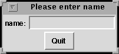
We can now click on the entry field, and type in some text, finishing with <Return>, and we get:
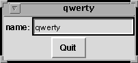
"Pressing" the quit button (i.e. moving the cursor over it and pressing a mouse button) closes the window and terminates the start_tcl command.
The purpose of this documentation is:
This document is not intended to replace a Tk-Reference Manual, rather to be complementary. For serious working with tk the user will constantly want to consult this document in order to get more information on legal options or the visual appearance of widgets.
Tk is derived from Sml_Tk. A first version of Smlt_Tk [KSW96] was developed from GoferTK [VTS95]. After translating it from a lazy pure functional language (Gofer) into an eager impure functional language (SML), and the extension of the functionality in the following versions, only a passing similarity remains, but we acknowledge the ancestry. We also snatched some code for the TCL_INSIDE configuration on the C-level.
More recently, Elsa Gunter and Dave McQueen of Bell Labs have made many suggestions and contributions which we gratefully acknowledge; in particular, Elsa Gunter has provided the implementation for polygons, arrowheads, and mixed colours.
For the current release, Erik Behrends provided code for the TCL_INSIDE configuration, and Andre Lüdtke many invaluable improvements on both the kernel and the toolkit (in particular, the filer).
Technically, tk starts a Tcl interpreter (called a wish
for windowing shell) either as subprocess or a
subroutine. At runtime, tk compiles
the description of the user interface (given by Widgets, Windows, etc
described above) into Tcl expressions which are passed to the wish.
tk comes in two configurations:
the default configuration is based on a loose coupling with the wish, which is created as a child process. The connection between the wish and tk is established via pipes, which is sufficiently fast for most applications and machines. This configuration runs with all SML compilers implementing the Posix module, on operating systems such as Linux and Solaris, but not Windows.
In the so-called TCL_INSIDE configuration Tk is linked into the SML runtime system. This configuration is only available for one particular implementation of SML, namely SML of New Jersey (SML/NJ). It offers higher speed, but is slightly more difficult to install. However, TCL_INSIDE is independent from the Posix module of SML (and thus potentially easier to port to Windows).
tk keeps an internal GUI state consisting of a list of windows and additional information. This state is a logical image of the (external) state of the wish. This is pretty much in the style of [VTS95], but in contrast to the Tk interface caml_tk [PR95], where widgets and windows are built by successive calls of functions with side effects; in tk, the data types for widgets and windows are freely generated in order to support a more functional style of programming, with less side effects.
The functionality of tk can be divided into the following categories:
The user can change the state of the wish by inserting text into a text widget, by clicking on a radio button, by selecting a text in a listbox, by inserting a cursor into a text, by manipulating a scrollbar or by resizing a window. Since it would require far too much implementation overhead to enforce the equivalence between GUI state and state of the wish automatically and at all times, the distinction between the getXX-functions and the readXX-functions is crucial. In many cases, configuration and coordinates in the GUI state represent only the initial value, while the actual values have to be explicitly read from the wish. This is especially the case for Tcl variables, cursor positions within a texts, and texts editable by the user.
The GUI state is particularly useful to realize a naming mechanism. To most widgets, event_callbacks can be annotated with the constructor EVENT_CALLBACK, which takes as arguments an event and a callback. An event is given by the structured data type Event, which models events as given in Tcl (see [Oust94], Chapter 8, pp. 199) in a structured way (examples are the events BUTTON_PRESS(THE 1) for the first mouse button being pressed, or KEY_PRESS "Return" for the Return key being pressed), and a callback, which is a Mythryl function of the functionality Tk_Event-> Void. Tk_Event is a data type containing information on the cursor position (both relative to the window and absolute and the buttons pressed) etc. tk will map the Mythryl functions (callbacks) to the events as extracted from the GUI state, and call the relevant function when the specified event occurs.
Tk is not completely orthogonal. In some cases, configuration options for a widget are expressed differently for each individual widget; tk allows to abstract from these. However, the problem remains that not every component can be arbitrarily combined with each other, e.g. only particular widgets are allowed to build a menu. In Tk these constraints are checked dynamically. Since SML does not contain a subclass concept like Haskell which would allow to express such contextual side conditions on the type level, a compromise had to be made between precision in modelling the data types on the one hand and usability, flexibility and simplicity of the tk user interface on the other. This compromise consists in collecting all configuration options into one data type, leaving violations to dynamic checks, while in all other places the construction of widgets is as accurate as possible.
Since Tcl does not provide any data type other than texts, and in particular no constructors for aggregations like arrays or lists, some ad-hoc constructs had been introduced to express collections and groups of objects. Since SML offers better ways to represent aggregations, tk does not support these concepts and hence sometimes simplifies the view of Tk. This holds also for scrollbars (on text widgets and canvas widgets) which are no longer widgets in their own right in tk.
An important design decision was made in naming SML functions (rather than threads) to events. This is the basis for tk's simplicity; available concurrency toolkits (such as John Reppy's Concurrent ML, which unfortunately is based on cooperative multitasking) would limit tk to particular SML implementations without providing a full solution to important requirements (such as a kill-button for diverging threads). For these reasons we stuck to the naming of functions to events (giving the control to the application during its evaluation) and provided an ad-hoc solution for the kill-button (see below).
This chapter contains a technical description of tk's export interface in a reference manual style. The export interface consists of two apis:
The two apis correspond to the two phases in which a tk application's interface is built. In the first phase the initial appearance of the interface is specified in a declarative way, , using the data types from Tk_Types. Then in the second phase control is passed to tk, and the runtime behaviour of the application is a reactive system, i.e. the application's behaviour is a reaction to the user's input, implemented using the functions from Tk which allow dynamic changes to the interface and much more.
The main external interface of tk is the class tk. Its export interface consists of a join of the two apis Tk_Types and Tk, which completely restrict the implementing class (also in the file tk/src/export.pkg). In SML terminology, the joint api is the opaque interface to tk.
This section describes the api Tk_Types. It mainly contains the data types, constructors and selectors for the freely generated term package by which the user interface is declaratively specified.
The data structures closely mirror the Tk concepts. In order to understand these concepts, such as the different kinds of widgets, their purpose and configuration options, the graphical layout and the behaviour of the Tk layout algorithm (the "packer"), it will be necessary to consult the Tcl/Tk-book [REF 96] or the manual pages from the Tcl/Tk distribution package. This documentation will not try to explain these Tk concepts, but rather point out where tk behaves differently from Tk.
The following types are identifiers for windows, widgets, canvas items, text text_items and images, respectively. See section 3.2.1 below how to create identifiers.
type Window_ID type Widget_ID type Canvas_Item_ID type Text_Item_ID type Image_ID
Exceptions usually indicate a programming error. Favourite examples include referring to non-existing widgets, windows or canvas items, wrong configurations (some widgets require certain configurations whereas others prohibit them), applying partial selectors to the wrong variant of the data type, using non-existing fonts or loading non-existing images.
exception CANVAS_ITEM of String exception WIDGET of String exception TCL_ERROR of String exception CONFIG of String exception WINDOWS of String
There are two functions with which to start a tk application; one catches these exceptions and prints the relevant string (containing an error message), and one does not (see section 3.2.2 below). It should be pointed out these exceptions indicate some kind of malfunction, usually a programming error, so just catching them and continuing is not such a bright idea.
When running as reactive system, activation is driven by events such as mouse buttons or keys being pressed, or the cursor entering or leaving widgets (or more precisely, their graphical representations on the screen).
The most common reaction in Tk applications is that of a CALLBACK. Callbacks are specified as part of the Trait information in widgets such as buttons.
type Void_Callback = (Void -> Void)
For finer control of the interactive behaviour of the application, the data type Event_Callback specifies a particular event and the corresponding reaction.
enum Event_Callback = EVENT_CALLBACK of Event * Callback
Events are given by the enum Event. Events are either basic events, or modifications of events.
Basic events are:
These can be modified as follows:
A final different kind of event is given by DEPRECATED_EVENT, which takes as argument a description of events in the style of Tcl (see [Oust94] section 18.3). This kind of event description is strongly discouraged, though, since syntactically wrong event descriptions lead to a wish runtime error.
enum Event = # window events FOCUS_IN | FOCUS_OUT | CONFIGURE | MAP | UNMAP | VISIBILITY | DESTROY # Key press/release events | KEY_PRESS of String | KEY_RELEASE of String # Button press/release events, NULL means any old Button | BUTTON_PRESS of Int null_or.option | BUTTON_RELEASE of Int null_or.option # Cursor events | ENTER | LEAVE | MOTION # user-defined events, or explicitly given events | DEPRECATED_EVENT of String # event modifiers | SHIFT of Event | CONTROL of Event | LOCK of Event | ANY of Event | DOUBLE of Event | TRIPLE of Event | MODIFIER_BUTTON of Int * Event | ALT of Event | META of Event | MOD3 of Event | MOD4 of Event | MOD5 of Event
Not all possible combinations make sense though; for example, a button event modified with a different button, or a doubled enter event are clearly paradoxical (and hence will never occur, so naming anything to them is a lost cause). A Callback is an ML function to be called when the specified event occurs:
type Callback = (Tk_Event -> Void)
Events have the following package:
enum Tk_Event =
TK_EVENT of Int # %b button number
* String # %s state field
* Int # %x x field
* Int # %y y field
* Int # %X x_root field
* Int /* %Y y_root field */The corresponding selector functions are:
my get_button : Tk_Event -> Int my get_state : Tk_Event -> String my get_x_coordinate : Tk_Event -> Int my get_root_x_coordinate : Tk_Event -> Int my get_y_coordinate : Tk_Event -> Int my get_root_y_coordinate : Tk_Event -> Int
When no naming for an event has been specified, nothing happens, e.g. a button press in a canvas widget is simply ignored if no naming has been specified and does not lead to an error.
With some widgets or items, not all events are allowed in their naming; further, the information in Tk_Event is only valid for some, but not all of the events. See chapter 18 in the Tcl/Tk handbook [Oust94] or the bind manual page about the details of events and event_callbacks.
Be also warned that the interaction between mouse button presses and mouse movements is fairly intricate: when a mouse button is being pressed, all subsequent mouse events go to the widget or item over which this event has occurred until the mouse button is released. In particular, no enter event is generated if the mouse is moved into another widget, item or window with the mouse button pressed, the enter event will only be generated once the mouse button has been released.
Finally, be aware that the keyboard focus (see section 3.2.14) determines where keyboard events go. It will rarely make sense to bind actions to keys in widgets other than text widgets or entry widgets, since these other widgets will usually not be in a position to receive keyboard events.
Fonts in tk are described by the data type Font, which offers a slight abstraction over the standard X11 description. The idea is to provide a set of standard fonts, which can be modified for style and size. These standard fonts are mapped (on calling tk.init) to specific X11 fonts. If a specific font is not found (e.g. in a particular size or weight), another one is selected. This approach has been chosen because fonts are provided by the X server, and hence can change; this way, applications can still use different fonts, but are not dependent on any particular X11 font being present in the server.
The standard fonts are NORMAL_FONT, TYPEWRITER, SANS_SERIF and SYMBOL. They can be modified as BOLD, ITALIC, TINY (very small), SMALL, NORMAL_SIZE, LARGE and HUGE. The modifier SCALE allows to scale fonts arbitrarily, where SCALE 1.0 has the same effect as NORMAL_SIZE. Users insisting on a particular X11 font can obtain these by XFONT.
enum Font_Trait = BOLD | ITALIC |
TINY | SMALL | NORMAL_SIZE | LARGE | HUGE |
SCALE of real
enum Font = XFONT of String
| NORMAL_FONT of Font_Trait List
| TYPEWRITER of Font_Trait List
| SANS_SERIF of Font_Trait List
| SYMBOL of Font_Trait ListThe mapping of the standard fonts to the X11 font implementing them is described by the type fonts.Config. The provided defaults are as follows:
my
font_config
=
{ normal_font = ref "-*-courier",
typewriter = ref "-misc-fixed",
sans_serif = ref "-*-helvetica",
symbol = ref "-*-symbol",
base_size = ref 12,
exact_match = ref true,
resolution = ref 75
}
Trait information correspond to Tk's options. It is the information used to customise the predefined widgets. Trait options which have not been specified are left open, and the default for the widget type in question is chosen.
The effects and intended use of the various configuration options, and which option is valid for which kind of widget, can be found in the Tk manual. The following configure options are supported by tk. For every constructor we give the corresponding Tk option for easier reference to the Tk manual pages.
enum Trait = WIDTH of Int # -width ... | HEIGHT of Int # -height ... | BORDER_WIDTH of Int # -borderwidth ... | RELIEF of Relief_Kind # -relief ... | FOREGROUND of Color # -foreground ... | BACKGROUND of Color # -background ... | MENU_UNDERLINE of Int # -underline ... for menus | ACCELERATOR of String # -accelerator "bla" | TEXT of String # -Label "bla" | FONT of fonts.Font # -font "bla" | VARIABLE of String # -variable "bla" | VALUE of String # -value "bla" | ICON of Icon_Variety # -bitmap or -image ... | CURSOR of Cursor_Kind # -cursor ... | CALLBACK of Void_Callback # -command ... | ANCHOR of Anchor_Kind # -anchor ... | FILL_COLOR of Color # -fill ... | OUTLINE of Color # -outline ... | OUTLINE_WIDTH of Int # -width ... | SMOOTH of Bool # -smooth .. | ARROW of Arrowhead_Pos # -arrow ... | SCROLL_REGION of Int * Int * Int * Int # -scrollregion ... | CAP_STYLE of Capstyle_Kind # -capstyle ... | JOIN_STYLE of Joinstyle_Kind # -joinstyle ... | COLOR_MAP of Colormap_Entry List # -colormap ... | COLOR_MODE of Color_Mode # -colormode ... | FILE of String # -file ... | FONT_MAP of Fontmap_Entry List # -fontmap ... | PRINT_HEIGHT of String # -height ... | PAGE_ANCHOR of Anchor_Kind # -pageanchor ... | PAGE_HEIGHT of String # -pageheight ... | PAGE_WIDTH of String # -pagewidth ... | PAGE_X of String # -pagex ... | PAGE_Y of String # -pagey ... | ROTATE of Bool # -rotate ... | PRINT_WIDTH of String # -width ... | PRINT_X of String # -x ... | PRINT_Y of String # -y ... | OFFSET of Int # -offset ... Offset over baseline for texts | UNDERLINE # -underline ... underline for texts (see MUnderline above) | JUSTIFY of Justify # -justify ... Justification: left/right/center | WRAP of Wrap_Mode # -wrap ... | ORIENT of Orientation # -orient ... | ACTIVE of Bool # -state ... # Scale configurations | SLIDER_LABEL of String # -label ... | LENGTH of Int # -length ... | SLIDER_LENGTH of Int # -sliderlength ... | FROM of real # -from ... | TO of real # -to ... | RESOLUTION of real # -resolution ... | DIGITS of Int # -digits ... | BIG_INCREMENT of real # -bigincrement ... | TICK_INTERVAL of real # -tickinterval ... | SHOW_VALUE of Bool # -showvalue ... | SLIDER_RELIEF of Relief_Kind # -sliderrelief ... | REAL_CALLBACK of Real_Callback # -command ... special command for use with scales (called with the scale value) | REPEAT_DELAY of Int # -repeatdelay ... | REPEAT_INTERVAL of Int # -repeatinterval ... | THROUGH_COLOR of Color # -throughcolor ... | INNER_PAD_X of Int # -padx ... | INNER_PAD_Y of Int # -pady ... | SHOW of char # -show ... (password entry fields etc.) | TEAR_OFF of Bool /* -tearoff ... tearoff for menus */
enum Relief_Kind = FLAT | GROOVE | RAISED | RIDGE | SUNKEN
The relief customises the visual three-dimensional appearance (see [Oust94] section 16.1.1) of widgets.
enum Color = NO_COLOR | BLACK | WHITE | GREY | BLUE | GREEN | RED | BROWN | YELLOW
| PURPLE | ORANGE | MIX of {red : Int, blue : Int, green : Int}We apologise to British users for the spelling (and blame Tk for it).
enum Anchor_Kind = NORTH | NORTHEAST |
EAST | SOUTHEAST |
SOUTH | SOUTHWEST |
WEST | NORTHWEST |
CENTERThe option Anchor_Kind is used for the orientation of an object with respect to their position (anchor) (see [Oust94] section 16.11.2).
These datatypes describe how lines, when drawing on a canvas, are joint.
enum Capstyle_Kind = BUTT | PROJECTING | ROUND enum Joinstyle_Kind = BEVEL | MITER | ROUND_JOIN
type Bitmap_Name type Bitmap_File type Image_File enum Icon_Variety = NO_ICON | TK_BITMAP of Bitmap_Name # -bitmap <tk bitmap> | FILE_BITMAP of Bitmap_File # -bitmap @<filename> | FILE_IMAGE of Image_File * Image_ID /* -image ... */
TK_BITMAP and FILE_BITMAP allow the use of X11 bitmaps. Bitmap_Name must be the name of one of Tk's internal bitmaps. Bitmap_File specifies a pathname of a file with the appropriate format. Bitmaps can be used with some widgets such as LABEL or BUTTON (see also the bitmap manual page or [Oust94] section 16.3.3), and in canvas items (see section 3.1.7).
Tk also supports images (with depth more than 1). Images are specified with FILE_IMAGE, where Image_File is the pathname of a file in a recognised format such as GIF (for other formats supported see the image manual page). Examples can be found in src/tests+examples/big_ex.pkg.
The three types Bitmap_Name, Bitmap_File and Image_File are synonymous with String.
type Cursor_Name
type Cursor_File
enum Cursor_Kind
=
NO_CURSOR
| XCURSOR of Cursor_Name * ((Color * (Color Null_Or )) Null_Or )
| FILE_CURSOR of Cursor_File * Color * ((Cursor_File * Color) Null_Or )With XCURSOR the predefined Tk cursors can be used, where the argument Cursor_Name is the name of a Tk cursor. The next two optional arguments are for the foreground and background colour of the bitmap cursor.
One can also use self-designed cursors via the constructor FILE_CURSOR. The first argument is the name of the bitmap file (Cursor_File) for the cursor, the second the foreground colour and the last two optional arguments are a mask file (Cursor_File) and the respective background colour.
The types Cursor_Name and Cursor_File are synonymous with String.
Examples can be found in src/tests+examples/big_ex.pkg and details in [Oust94] section 16.11.1.
If users find they need to use Tk options which are not supported by tk, they are invited to add support for them; look at src/config.pkg to see how the other configurations are translated in Tcl code (and that is essentially all there is to do).
The layout in tk is done with the Tk packer. Since release 3.0 tk also supports grid packing, which means that you also place widgets in a specified row and column of a grid within a container. You can choose the packing algorithm using the PACKED or GRIDDED constructor of the type Widgets, which is used to specify the initial content of a container (containers in tk are FRAME as a normal container widget, TEXT_ITEM_WIDGET for widgets within annotated texts, CANVAS_WIDGET for widgets within canvases, and of course windows). Once chosen you can not change the applied packing algorithm. The programmer is strongly encouraged to read chapter 17 of [Oust94] and try out some of the examples, as the Tk packer exhibits a somewhat intractable behaviour with occasionally rather surprising results; hence a certain amount of experimentation and experience will not go amiss.
Bear in mind that
tk implements a basic subset of Tk's pack options and possibilities. These are:
enum Edge = TOP | BOTTOM | LEFT | RIGHT
enum Fill_Style = ONLY_X | ONLY_Y | XY
enum Sticky_Kind = TO_N | TO_S | TO_E | TO_W |
TO_NS | TO_NE | TO_NW | TO_SE |
TO_SW | TO_EW | TO_NSE | TO_NSW |
TO_NEW | TO_SEW | TO_NSEW
enum Packing_Hint
=
EXPAND of Bool
| FILL of Fill_Style
| PAD_X of Int
| PAD_Y of Int
| PACK_AT of Edge
| COLUMN of Int
| ROW of Int
| STICK of Sticky_Kind
Widgets (and their components) are the most important and powerful enum of tk (and Tk). They are the basic building blocks of any gui.
The different types of widgets are explained in the chapter A guided Tour through Tk Widgets in [Oust94]. tk offers one constructor for every widget type. Selector and update functions on widgets are given where useful.
Some widgets like frames (a grouping of widgets), canvas widgets (a "drawing pad") and text widgets can contain either widgets themselves, or items (canvas items or text text_items) which contain widgets; this results in a mutually recursive, fairly lengthy data type definition.
As remarked above, the Widget, Canvas_Item and Text_Item data types have some parameters which are only intended as initial values. They appear in italics below. If one wants to get the actual value of such an initial value, one has to use a readXXX function rather than a getXXX or selXXX function.
enum Widget =
FRAME of {widget_id : Widget_ID, subwidgets : Widgets,
packing_hints : Packing_Hint List, traits : Trait List,
event_callbacks : Event_Callback List}
| MESSAGE of {widget_id : Widget_ID, packing_hints : Packing_Hint List,
traits : Trait List, event_callbacks : Event_Callback List}
| LABEL of {widget_id : Widget_ID, packing_hints : Packing_Hint List,
traits : Trait List, event_callbacks : Event_Callback List}
| LIST_BOX of {widget_id : Widget_ID, scrollbars : Scrollbars_At,
packing_hints : Packing_Hint List, traits : Trait List,
event_callbacks : Event_Callback List}
| BUTTON of {widget_id : Widget_ID, packing_hints : Packing_Hint List,
traits : Trait List, event_callbacks : Event_Callback List}
| RADIO_BUTTON of {widget_id : Widget_ID, packing_hints : Packing_Hint List,
traits : Trait List, event_callbacks : Event_Callback List}
| CHECK_BUTTON of {widget_id : Widget_ID, packing_hints : Packing_Hint List,
traits : Trait List, event_callbacks : Event_Callback List}
| MENU_BUTTON of {widget_id : Widget_ID, mitems : Menu_Item List,
packing_hints : Packing_Hint List, traits : Trait List,
event_callbacks : Event_Callback List}
| TEXT_ENTRY of {widget_id : Widget_ID, packing_hints : Packing_Hint List,
traits : Trait List, event_callbacks : Event_Callback List}
| TEXT_WIDGET of {widget_id : Widget_ID, scrollbars : Scrollbars_At,
live_text : Live_Text, packing_hints : Packing_Hint List,
traits : Trait List, event_callbacks : Event_Callback List}
| CANVAS of {widget_id : Widget_ID, scrollbars : Scrollbars_At,
citems : Canvas_Item List, packing_hints : Packing_Hint List,
traits : Trait List, event_callbacks : Event_Callback List}
| POPUP of {widget_id : Widget_ID, tearoff : Bool, mitems : Menu_Item List}
| SCALE_WIDGET of {widget_id : Widget_ID, packing_hints : Packing_Hint List,
traits : Trait List, event_callbacks : Event_Callback List}
and Widgets = PACKED of (Widget List)
| GRIDDED of (Widget List)
The type Widgets represents a collection of widgets, packed either with Tk's Packer geometry manager, or with the Grid geometry manager. Every widget has an identifier of the type Widget_ID, and pack information, configuration options and event_callbacks. Other parameters are widget specific, such as The following are useful selector and update functions for Widget. (Note that you can't update the widget identifier.) Some of these are necessarily partial, and when applied to the wrong variant of widget will raise the exception WIDGET. First, the ones applicable to all widgets:
my get_widget_id : Widget -> Widget_ID my get_widget_event_callbacks : Widget -> Event_Callback List my get_widget_traits : Widget -> Trait List my get_widget_packing_hints : Widget -> Packing_Hint List my update_widget_event_callbacks : Widget -> Event_Callback List -> Widget my update_widget_traits : Widget -> Trait List -> Widget
Functions specific to Canvas: my update_widget_packing_hints : Widget -> Packing_Hint List-> Widget
my get_canvas_items : Widget -> Canvas_Item List my get_canvas_scrollbars : Widget -> Scrollbars_At my update_canvas_items : Widget -> Canvas_Item List -> Widget my update_canvas_scrollbars : Widget -> Scrollbars_At -> Widget
Functions specific to TEXT_WIDGET:
my get_text_widget_scrollbars : Widget -> Scrollbars_At my get_text_widget_text : Widget -> String my get_text_widget_text_items : Widget -> Text_Item List my update_text_widget_scrollbars : Widget -> Scrollbars_At -> Widget my update_text_widget_annotations : Widget -> Text_Item List -> Widget
As opposed to Tk, tk does not offer a dedicated widget type for scrollbars. Rather, for the widget types for which scroll bars are useful- text widgets, canvas widgets, and list boxes- scrollbars are provided automatically. Their location is determined by the argument scrollbars in their constructor (where NOWHERE means no scroll bars at all).
enum Scrollbars_At = NOWHERE | AT_LEFT | AT_RIGHT | AT_TOP | AT_BOTTOM | AT_LEFT_AND_TOP | AT_RIGHT_AND_TOP | AT_LEFT_AND_BOTTOM | AT_RIGHT_AND_BOTTOM
This also has the advantage that the programmer need not to concern himself with the programming of the scroll bar.
A canvas widget is a "drawing pad". Drawing on a canvas is done by placing the following canvas items onto it, and as opposed to normal widgets, the location of the items is exactly specified by means of coordinates, rather than left to a packing algorithm. In the toolkit library, canvas widgets have been used to implement a drag&drop package and a generic user interface (see section 4).
tk provides all types of canvas items found in Tk. These are:
enum Canvas_Item
=
CANVAS_RECTANGLE of {citemId : Canvas_Item_ID, coord1 : Coordinate, coord2 : Coordinate,
traits : Trait List, event_callbacks : Event_Callback List}
| CANVAS_OVAL of {citemId : Canvas_Item_ID, coord1 : Coordinate, coord2 : Coordinate,
traits : Trait List, event_callbacks : Event_Callback List}
| CANVAS_LINE of {citemId : Canvas_Item_ID, coords : Coordinate List,
traits : Trait List, event_callbacks : Event_Callback List}
| CANVAS_POLYGON of {citemId : Canvas_Item_ID, coords : Coordinate List,
traits : Trait List, event_callbacks : Event_Callback List}
| CANVAS_TEXT of {citemId : Canvas_Item_ID, coord : Coordinate,
traits : Trait List, event_callbacks : Event_Callback List}
| CANVAS_ICON of {citemId : Canvas_Item_ID, coord : Coordinate, icon_variety : Icon_Variety,
traits : Trait List, event_callbacks : Event_Callback List}
| CANVAS_WIDGET of {citemId : Canvas_Item_ID, coord : Coordinate, subwidgets : Widgets,
traits : Trait List, event_callbacks : Event_Callback List}
| CANVAS_TAG of {citemId : Canvas_Item_ID, citemIds : Canvas_Item_ID List}As already noted above, italic parameters are the initial value. Coordinates as arguments of the constructors allow convenient specification of the initial position.
The following are the selector and update functions for Canvas_Item. Again, some of them will be necessarily partial and when applied to the wrong type of widget will raise an exception CANVAS_ITEM. First, the functions applicable to most or all canvas items:
my get_canvas_item_ID : Canvas_Item -> Canvas_Item_ID my get_canvas_item_coordinates : Canvas_Item -> Coordinate List my get_canvas_item_traits : Canvas_Item -> Trait List my get_canvas_item_event_callbacks : Canvas_Item -> Event_Callback List my update_canvas_item_coordinates : Canvas_Item -> Coordinate List -> Canvas_Item my update_canvas_item_traits : Canvas_Item -> Trait List -> Canvas_Item my update_canvas_item_event_callbacks : Canvas_Item -> Event_Callback List -> Canvas_Item
The following are specific to CANVAS_ICON:
my get_canvas_item_icon : Canvas_Item -> Icon_Variety my update_canvas_item_icon : Canvas_Item -> Icon_Variety -> Canvas_Item
Within a CANVAS_ICON item one can have the same bitmaps and images as presented in section 3.1.5.
The following are specific to CANVAS_WIDGET:
my get_canvas_item_subwidgets : Canvas_Item -> Widget List my updItemWidgetConf : Canvas_Item -> Trait List -> Canvas_Item my update_canvas_item_subwidgets : Canvas_Item -> Widget List -> Canvas_Item
CANVAS_WIDGET allows widgets within canvas items. Tk offers to have one widget within a window item. We found it useful to have more than one, so an tk widget canvas item contains a list of widgets, which are placed within a frame widget. The Widget_ID and Configuration arguments of the CANVAS_WIDGET constructor refer to this frame widget. The identifier for the frame widget must be obtained by using the function make_canvas_item_frame_id (see section 3.2.1).
The following functions are specific for CANVAS_TAG:
my get_canvas_item_canvas_items : Canvas_Item -> Canvas_Item_ID List my update_canvas_item_canvas_items : Canvas_Item -> Canvas_Item_ID List -> Canvas_Item
CANVAS_TAG is only a very weak way of structuring canvas items. Many of the operations on CItems are not applicable to CANVAS_TAG, but e.g. move_canvas_item and set_canvas_item_coordinates are, giving a convenient way of moving about groups of canvas items.
Text annotations are event_callbacks and traits for specific parts of text within a text widget. They can be used for two purposes, corresponding to the two variants of the data type Text_Item below:
Positions or regions within a text are specified with the data type MARK. For historical reasons, tk's marks are Tk's indices. For details, see [Oust94] section 19.6.
enum Mark = MARK of Int # line number [1..]
* Int # Char number [0..]
| MARK_TO_END of Int # end of line i
| MARK_END # end of text
and Text_Item =
TEXT_ITEM_TAG of {text_item_ID : Text_Item_ID, marks : (Mark * Mark) List,
traits : Trait List, event_callbacks : Event_Callback List}
| TEXT_ITEM_WIDGET of {text_item_ID : Text_Item_ID, mark : Mark, widget_id : Widget_ID,
subwidgets : Widgets, traits1 : Trait List,
traits2 : Trait List, event_callbacks : Event_Callback List}As already noted italic arguments are only initial values. The position arguments of the constructors allow convenient specification of their initial position.
The following are the selector and update functions for Text_Item. First, those that are applicable to both variants of text_items:
my get_text_item_ID : Text_Item -> Text_Item_ID my get_text_item_traits : Text_Item -> Trait List my get_text_item_event_callbacks : Text_Item -> Event_Callback List my get_text_item_marks : Text_Item -> (Mark * Mark) List my update_text_item_traits : Text_Item -> Trait List -> Text_Item my update_text_item_event_callbacks : Text_Item -> Event_Callback List -> Text_Item
get_text_item_marks applied to a TEXT_ITEM_WIDGET returns a singleton list containing a pair of two marks both equal to the position of the widget annotation, i.e.
get_text_item_marks(TEXT_ITEM_WIDGET(_,p,_,_,_,_,_)) = [(p, p)]
The following functions are specific to TEXT_ITEM_WIDGET and will raise an exception TEXT_ITEM when applied to TEXT_ITEM_TAG.
my get_text_item_widget_ID : Text_Item -> Widget_ID my get_text_widget_subwidgets : Text_Item -> Widget List my get_text_item_widget_traits : Text_Item -> Trait List my update_text_item_subwidgets : Text_Item -> Widget List -> Text_Item
TEXT_ITEM_WIDGET allows to embed widgets within a text. Tk offers to have one widget within a window annotation. We found it useful to have more than one, so an tk widget annotation contains a list of widgets, which are placed within a frame widget. The Widget_ID and Configuration arguments of the TEXT_ITEM_WIDGET constructor refer to this frame widget. The identifier for the frame widget must be obtained by using the function make_text_item_frame_ID (see section 3.2.1).
Annotated texts consist of a text, given by a string, and a list of text_items within that text. They are provided as a separate enum because this way they can be treated abstractly; e.g. there is a function which concatenates two annotated texts, adjusting the text_items in the second text (see section 3.2.9). The first, optional argument of the constructor LIVE_TEXT in the following is the length of the text (in lines and columns); if it is not given, it will be calculated on a by-need basis.
and Live_Text =
LIVE_TEXT of {len : (Int* Int) null_or.option, str : String,
text_items : Text_Item List}The selectors and update functions for annotated texts are
my get_livetext_text : Live_Text -> String my get_livetext_text_items : Live_Text -> Text_Item List my update_livetext_text_items : Live_Text -> Text_Item List -> Live_Text
Annotated texts can be conveniently produced with tk's markup language and the generic parser provided for it (see section 4.2), which alleviates the need to meticulously count lines and columns within a text.
A menu is a list of the following items:
and Menu_Item = MENU_CHECKBUTTON of (Trait) List
| MENU_RADIOBUTTON of (Trait) List
| MENU_CASCADE of Menu_Item List * Trait List
| MENU_SEPARATOR
| MENU_COMMAND of (Trait) ListThese correspond to the Tk type. Note that for MENU_CHECKBUTTONs and MENU_RADIOBUTTON, a Tcl variable has to be specified (using the Variable configuration option) holding the status of the check or radio button. Their current status can be read using get_tcl_var_value (see section 3.2.10 below). Following are the selectors for Menu_Item:
my get_menu_item_callback : Menu_Item -> Void_Callback my get_menu_item_relief_kind : Menu_Item -> Relief_Kind my get_menu_item_text : Menu_Item -> String my get_menu_item_width : Menu_Item -> Int my get_menu_item_traits : Menu_Item -> Trait List
A window is a quadruple of a window identifier, a list of window manager options, its constituting widgets, and a Void_Callback that is evaluated just after the creation of the window. The latter can be used for initialisation of the widgets in the window, e.g. listboxes or text widgets can be filled with an initial content. Windows are created with the following function:
type Window
my make_window : {window_id : Window_ID,
traits : Window_Trait List,
subwidgets : Widgets,
event_callbacks: Event_Callback List,
init : Void_Callback} -> WindowIdentifiers for windows can be obtained by the functions make_window_id or make_tagged_window_id (see section 3.2.1).
The selector functions for Window are:
my get_window_callback : Window -> Void_Callback my get_window_traits : Window -> Window_Trait List my get_window_subwidgets : Window -> Widget List my get_window_ID : Window -> Window_ID
The type Window_Trait provides a subset of the window manager options for windows, corresponding to the arguments of Tk's wm command (see chapter 22 of [Oust94]):
enum User_Kind =
User
| Program
enum Window_Trait
=
WINDOW_ASPECT_RATIO_LIMITS of Int * Int * Int *Int # xthin/ythin xfat/yfat
| WIDE_HIGH_X_Y of ((Int * Int) null_or.option) # width x height
* ((Int * Int) null_or.option) # xpos x ypos
| WIDE_HIGH_MAX of Int * Int # width * height
| WIDE_HIGH_MIN of Int * Int
| WINDOW_POSITIONED_BY of User_Kind
| WINDOW_SIZED_BY of User_Kind
| WINDOW_TITLE of String
| WINDOW_GROUP of Window_ID # window / leader
| TRANSIENTS_LEADER of Window_ID null_or.option
| OMIT_WINDOW_MANAGER_DECORATIONS of BoolA window title must only contain printable characters (space up to ~). See also the function check_window_title in section 3.2.13.
The selector functions for Window_Trait are:
my selWinAspect : Window -> (Int * Int * Int * Int) Null_Or my selWinGeometry : Window -> (((Int * Int) Null_Or) * ((Int * Int) Null_Or) ) Null_Or my selWinMaxSize : Window -> (Int * Int) Null_Or my selWinMinSize : Window -> (Int * Int) Null_Or my selWinPositionFrom : Window -> User_Kind Null_Or my selWinSizeFrom : Window -> User_Kind Null_Or my selWinTitle : Window -> Title Null_Or my selWinGroup : Window -> Window_ID Null_Or my selWinTransient : Window -> Window_ID Null_Or option my selWinOverride : Window -> Bool Null_Or
This section describes the functions from the api Tk. Whereas the data types and functions from the api Tk_Types generate the term package specifying the initial appearance of windows, widgets and other elements of the user interface, the functions from this section are primarily used to control the runtime behaviour of the application.
tk's runtime behaviour is centred around the concept of an event loop. This means that after building the GUI as specified by a list of initial windows (see start_tcl below), tk enters a loop waiting for events from the user sent to the graphical display. They are interpreted internally in Tk, passed to tk and then processed by calling ML functions provided by the programmer. In other words, tk is running as a reactive system, since the application merely reacts to user interaction. These reactions can be specified as
Technically, this means that tk keeps track which ML function is bound to which event. The wish is configured to send a string identifying the particular event when it occurs, and tk maps this string to the corresponding ML function, which is then executed.
In Tk, windows and widgets are referred to by their pathnames. In tk, windows and widgets are referred to by unique identifiers. The following operations produce fresh identifiers for windows, widgets, canvas items, frames for widgets within canvas items, text text_items and frames for widgets within >text text_items. The makeXX variants can be used to generate more meaningful names, for the advanced programmer analyzing the logfile (see the appendix).
my make_window_id : Void -> tk_types.Window_ID my make_widget_id : Void -> tk_types.Widget_ID my make_canvas_item_id : Void -> tk_types.Canvas_Item_ID my make_canvas_item_frame_id : Void -> tk_types.Widget_ID my make_text_item_id : Void -> tk_types.Text_Item_ID my make_text_item_frame_ID : Void -> tk_types.Widget_ID my make_tagged_window_id : String -> tk_types.Window_ID my make_tagged_canvas_item_id : String -> tk_types.Canvas_Item_ID my make_tagged_widget_id : String -> tk_types.Widget_ID my make_tagged_frame_id : String -> tk_types.Widget_ID
Sometimes it is useful to generate names for widget identifiers from given ones in a reconstructible way. This can be done using the following function:
fun make_sub_widget_ID(w, str)= w ^ str
The programmer should take great care not to use one identifier for more than one window (widget, canvas item, etc), and in particular should not use identifiers other than those obtained by the above functions.
The following four functions control tk's event loop, in particular start and termination of tk:
my start_tcl : tk_types.Window List -> Void my start_tcl_and_trap_tcl_exceptions : tk_types.Window List -> String my exit_tcl : Void -> Void my reset_tcl : Void -> Void
start_tcl takes the main window description and starts the event loop- i.e. it builds and displays the specified list of windows (with all their widgets and subcomponents), and then waits and reacts to user interaction until either exit_tcl is called, or the main window is closed.
start_tcl_and_trap_tcl_exceptions does the same as start_tcl, but additionally catches any exceptions which are raised within tk and prints their associated string value, detailing the nature of the failure leading to the exception (see section 3.1.2 above).
reset_tcl has to be called before the application can be started again after it was interrupted irregularly, either by a user interruptor by raising an exception. There are two forms of interupts that can be sent by the user to the main window: either <CTRL-C> is pressed which will result in an interuption of the current evaluation of a function bound to an event and continue with the eventloop,or <CTRL-\> pressed which will result in a break of the eventloop and kill the user interface.
Opening a window with open_window displays the window on the screen and adds it to the GUI state; for the main window, this is done by start_tcl. An attempt to open a window with a window id equal to that of an already open window results in an error. The function is_open can be used to find out if a window with a specific id has already been opened.
A window is closed with the function close_window. Closing the main window results in a call to exit_tcl; this is the preferred way to terminate an tk application.
my open_window : tk_types.Window -> Void my is_open : tk_types.Window_ID -> Bool my close_window : tk_types.Window_ID -> Void
The functions get_window and get_all_windows can be used the extract information about some or all windows from the GUI state. change_title changes the title of the window (as appearing in its title bar).
my get_window : tk_types.Window_ID -> tk_types.Window my get_all_windows : Void -> tk_types.Window List my change_title : tk_types.Window_ID -> tk_types.Title -> Void
The function get_widget retrieves the widget specified by the identifier Widget_ID from the GUI state.
my get_widget : tk_types.Widget_ID -> tk_types.Widget
Widgets can also be added or deleted dynamically. addWidget adds the widget to the window specified by Window_ID into the widget specified by Widget_ID. The latter widget has to be a frame widget, and the widget to be added will be inserted at the end of its list of subwidgets. delete_widget deletes the specified widget.
An example for the use of addWidget and delete_widget can be found in src/tests+examples/big_ex.pkg.
my addWidget : tk_types.Window_ID -> tk_types.Widget_ID -> tk_types.Widget -> Void my delete_widget : tk_types.Widget_ID -> Void
Note that it is not possible to add a widget to a window without any frames in it. In particular, it is not possible to add widgets to an initially empty window- clearly a pathological situation. If you really want a window which initially does not contain any widget, consider using only an invisible frame.
The visual appearance and the behaviour of a widget is modified by the configuration options and naming of the widget. This is is achieved with the following functions: set_event_callbacks and set_traits completely overwrite the event_callbacks or configuration options for the specified widget, whereas add_event_callbacks and add_trait replace event_callbacks or configuration options of the same kind, add new ones and leave the rest untouched.
my add_event_callbacks : tk_types.Widget_ID -> tk_types.Event_Callback List -> Void my add_trait : tk_types.Widget_ID -> tk_types.Trait List -> Void my set_event_callbacks : tk_types.Widget_ID -> tk_types.Event_Callback List -> Void my set_traits : tk_types.Widget_ID -> tk_types.Trait List -> Void
The functions getTextWidWidgets and getCanvasWidgets allow the convenient extraction of all top level widgets within text or canvas widgets; they are undefined for all other variants of widgets.
my getTextWidWidgets : tk_types.Widget -> tk_types.Widget List my getCanvasWidgets : tk_types.Widget -> tk_types.Widget List
You can also disable certain widgets using the Active configure option, which can also be set when the widget is already constructed (by the add_trait or set_traits functions). You can apply the Active configure option to buttons, radiobuttons, checkbuttons, menubuttons, scale widgets, entry widgets, and text widgets.
The functions in this section are for convenience only. They allow the easy extraction of parts of configuration options or event_callbacks for a widget specified by its Widget_ID.
# Are all derived from get_widget my get_traits : tk_types.Widget_ID -> tk_types.Trait List my get_relief_kind : tk_types.Widget_ID -> tk_types.Relief_Kind my get_callback : tk_types.Widget_ID -> tk_types.Void_Callback my get_event_callbacks : tk_types.Widget_ID -> tk_types.Event_Callback List my get_width : tk_types.Widget_ID -> Int my get_menu_callback : tk_types.Widget_ID -> Int List -> tk_types.Void_Callback
For example, get_traits is the composition of get_widget and get_widget_traits.
This section describes some uniform operations for widgets containing text. These encompass mainly list boxes and entry widgets.
A position within text in these widgets is specified with the enum Mark (see section 3.1.7 above) is used, with the following conventions:
These functions are mainly geared towards list boxes and entry widgets. For text widgets, we recommend the funtions detailed below, since they take annotated texts as arguments, and in particular handle read-only text widgets correctly - note that using insertText etc. on a read-only text widget will fail!
The functions insertText and insertTextEnd insert text into the widget specified by Widget_ID at either the specified position, or the end. The function clearText deletes all text from the specified widget, and deleteText deletes the specified region of text from the specified widget.
my insertText : tk_types.Widget_ID -> String -> tk_types.Mark -> Void my insertTextEnd : tk_types.Widget_ID -> String -> Void my clearText : tk_types.Widget_ID -> Void my deleteText : tk_types.Widget_ID -> tk_types.Mark * tk_types.Mark -> Void
Text in widgets of these kinds can be changed interactively by the user. Since this change is not reflected in the GUI state, the following functions have to be used to obtain the actual text (or region of text) from a widget.
my get_tcl_selected_text : tk_types.Widget_ID -> tk_types.Mark * tk_types.Mark -> String my get_tcl_text : tk_types.Widget_ID -> String
The user may select a position or a range of text within widgets containing text (see section 3.2.15 below). get_tcl_cursor returns the position of the cursor, and get_tcl_selection_range returns the regions of the selection as a list of pairs of positions (denoting start and end of the selected regions).
my get_tcl_cursor : tk_types.Widget_ID -> tk_types.Mark my get_tcl_selection_range : tk_types.Widget_ID -> (tk_types.Mark * tk_types.Mark) List
For example, if wl is a list box, get_tcl_cursor wl returns Mark(n,_) where n is the index of the list box currently containing the cursor.
Before using the function get_tcl_selection_range it should be checked with the function get_tcl_selection_window (see section 3.2.15 below) that the user has indeed selected some text within the widget.
To get and change the current state (read-only or user editable) of a text widget, use the following functions:
my get_tcl_text_widget_read_only_flag : Widget_ID -> Bool my set_tcl_text_widget_read_only_flag : Widget_ID -> Bool -> Void
To manipulate the contents of text widgets, the following functions are provided. They work on read-only text widgets, and they take annotated texts as arguments, adjusting the text_items in the text as necessary when inserting it.
my clear_livetext : Widget_ID -> Void my replace_livetext : Widget_ID -> Live_Text-> Void my delete_marked_livetext : Widget_ID -> Mark* Mark-> Void my insert_livetext_at_mark : Widget_ID -> Live_Text-> Mark-> Void my append_livetext : Widget_ID -> Live_Text-> Void /* use discouraged-- very inefficient! */
The function append_livetext has been implemented in the obvious way, which involves reading the content of the text widget and counting its length, and is far more inefficient that in has to be. If you find you really need this function, consider contributing a more efficient implementation to tk. Until then, restrict its usage to cases where it cannot be avoided.
The following functions are the counterpart to the functions on widgets in section 3.2.4 above for canvas items. They allow the dynamic addition of canvas items to a canvas, their removal from it and the reconfiguration of canvas item event_callbacks and configurations. Canvas Items are identified by the Widget_ID of the canvas within which they appear together with their Canvas_Item_ID identifier.
my get_canvas_item : tk_types.Widget_ID ->
tk_types.Canvas_Item_ID ->
tk_types.Canvas_Item
my add_canvas_item : tk_types.Widget_ID ->
tk_types.Canvas_Item -> Void
my delete_canvas_item : tk_types.Widget_ID ->
tk_types.Canvas_Item_ID -> Void
my get_canvas_item_event_callbacks : tk_types.Widget_ID ->
tk_types.Canvas_Item_ID ->
tk_types.Event_Callback List
my get_canvas_item_traits : tk_types.Widget_ID ->
tk_types.Canvas_Item_ID ->
tk_types.Trait List
my add_canvas_item_event_callbacks : tk_types.Widget_ID ->
tk_types.Canvas_Item_ID ->
tk_types.Event_Callback List -> Void
my add_canvas_item_traits : tk_types.Widget_ID ->
tk_types.Canvas_Item_ID ->
tk_types.Trait List -> VoidAs already noted above the coordinates given to the constructor of a canvas item are only its initial values; the actual values can be read with get_tcl_canvas_item_coordinates. set_canvas_item_coordinates sets new coordinates, and move_canvas_item moves an item by the specified distance.
my get_tcl_canvas_item_coordinates : tk_types.Widget_ID ->
tk_types.Canvas_Item_ID ->
tk_types.Coordinate List
my set_canvas_item_coordinates : tk_types.Widget_ID ->
tk_types.Canvas_Item_ID ->
tk_types.Coordinate List ->
Void
my move_canvas_item : tk_types.Widget_ID ->
tk_types.Canvas_Item_ID ->
tk_types.Coordinate ->
VoidNote set_canvas_item_coordinates does not work for CANVAS_TAG canvas items, but move_canvas_item does. Also, deleting a CANVAS_TAG item does not delete the subitems, only the tag item itself, and adding event_callbacks to a CANVAS_TAG item is somewhat useless, since they are not displayed as such --- you most probably want to add the event_callbacks to the subitems.
The following functions return the height and width of a canvas item in a uniform way. For items of type CANVAS_ICON with an image content, this is the only way to get their actual width and height. Note that the canvas item has to be displayed on a canvas to use these functions.
my get_tcl_canvas_item_height : tk_types.Widget_ID -> tk_types.Canvas_Item_ID -> Int my get_tcl_canvas_item_width : tk_types.Widget_ID -> tk_types.Canvas_Item_ID -> Int
The same set of basic functions as for canvas items is available for text text_items in text widgets. Text text_items are identified by the Widget_ID of the parent text widget and an Text_Item_ID identifier.
my get_text_item : tk_types.Widget_ID ->
tk_types.Text_Item_ID ->
tk_types.Text_Item
my add_text_item : tk_types.Widget_ID ->
tk_types.Text_Item -> Void
my delete_text_item : tk_types.Widget_ID ->
tk_types.Text_Item_ID ->Void
my get_text_item_event_callbacks : tk_types.Widget_ID ->
tk_types.Text_Item_ID ->
tk_types.Event_Callback List
my get_text_item_traits : tk_types.Widget_ID ->
tk_types.Text_Item_ID ->
tk_types.Trait List
my add_text_item_event_callbacks : tk_types.Widget_ID ->
tk_types.Text_Item_ID ->
tk_types.Event_Callback List -> Void
my add_text_item_traits : tk_types.Widget_ID ->
tk_types.Text_Item_ID ->
tk_types.Trait List -> VoidThe actual position and regions of text_items can be changed dynamically by the user (by editing the text in the widget); the function get_tcl_text_item_marks reads their actual values. readSelection returns the location of selected text within the particular text widget. Before using this function, it should be checked with the function get_tcl_selection_window (section 3.2.15) that the user has really selected some regions in this widget, otherwise the exception TCL_ERROR will be raised.
my get_tcl_text_item_marks : tk_types.Widget_ID ->
tk_types.Text_Item_ID ->
(tk_types.Mark * tk_types.Mark) List
my readSelection : tk_types.Widget_ID ->
(tk_types.Mark * tk_types.Mark) ListCaution: Since the user can interactively edit the text, it is possible that text_items are deleted without tk noticing. Hence, you cannot be sure that an annotation, although defined and displayed, still exists, and referring to it may lead to an error. There are three ways to handle this situation:
For annotated texts the following utility functions are provided. string_to_livetext makes a string into an annotated text without any text_items, empty_livetext is the empty annotated text, ++ concatenates annotated texts, keeping track of the text_items. append_newline_to_livetext appends a newline to the annotated text, and concatenate_livetext_with concatenates a list of annotated texts, interspersing them with the given string.
my string_to_livetext : String -> tk_types.Live_Text my empty_livetext : tk_types.Live_Text infix 70 ++ my ++ : tk_types.Live_Text * tk_types.Live_Text -> tk_types.Live_Text my append_newline_to_livetext : tk_types.Live_Text -> tk_types.Live_Text my concatenate_livetext_with : String -> tk_types.Live_Text List -> tk_types.Live_Text
Menus items are widgets, and as such can be added or deleted from a frame (containing other menu items, most likely) by the functions addWidget and delete_widget above. Currently, tk does not support the disabling of menus.
POPUP_TYPE-up menus are supported by the following two functions: make_and_pop_up_window takes a pop-up menu widget and pops it up at the specified coordinate, and pop_up_menu pops up a menu at the specified coordinate which has already been specified somewhere else in the widget tree. The optional integer parameter is the index of the menu item which should be below the mouse when the menu pops up.
my make_and_pop_up_window : tk_types.Widget ->
Int tk_types.Null_Or ->
tk_types.Coordinate ->
Void
my pop_up_menu : tk_types.Widget_ID ->
Int tk_types.Null_Or ->
tk_types.Coordinate -> Voidsrc/tests+examples/popup_ex.pkg is an example for the use of popup menus.
As already noted in section 3.1.7 above, these two functions are needed in the context of check buttons or radio buttons. The first argument is the variable name, the second argument for set_var_value is the intended value.
my set_var_value : String -> String -> Void my get_tcl_var_value : String -> String
Coordinates are pairs of integers. They can be added or subtracted with add_coordinates and subtract_coordinates; scale_coordinate is multiplication with a scalar.
type Coordinate= Int* Int my add_coordinates : tk_types.Coordinate -> tk_types.Coordinate -> tk_types.Coordinate my subtract_coordinates : tk_types.Coordinate -> tk_types.Coordinate -> tk_types.Coordinate my scale_coordinate : Coordinate-> Int-> Coordinate
A rectangle is given by two coordinates, specifying two of its corners. inside p r returns true if the point at coordinate p is inside the rectangle r, and intersect checks wether the two rectangles intersect. move_rectangle moves a rectangle by the specified coordinate (considered as a vector).
type Rectangle = Coordinate* Coordinate my inside : tk_types.Coordinate -> Rectangle -> Bool my intersect : Rectangle-> Rectangle-> Bool my move_rectangle : Rectangle -> tk_types.Coordinate -> Rectangle
my show_coordinate : Coordinate List -> String my coordinates_from_string : String -> Coordinate List my show_rectangle : Rectangle -> String
my check_widget_ID : Widget_ID -> Bool my check_window_ID : Window_ID -> Bool my check_window_title : tk_types.Title -> Bool
These functions checks whether the argument is a correct window id, widget id or window title.
Implicit checks of the widget configurations have been added. The applied configurations are checked, when the widgets are packed. An exception WIDGET will be raised, when bad configure options are found. However, tk's checks are not as comprehensive as one might hope for. The exception TCL_ERROR is raised when the wish returns a Tcl error- this happens in particular if an illegal window (widget, canvas item, etc.) is passed to the wish.
The functions focus and de_focus set and reset the keyboard focus to the specified window. Please refer to chapter 21 in [Oust94] for an explanation of the Tk focus model.
my focus : tk_types.Window_ID -> Void my de_focus : tk_types.Window_ID -> Void
With grab and de_grab, modal interactions can be implemented in tk (see chapter 24 of [Oust94]). A grab "claims ownership" of the mouse and keyboard, such that all subsequent events will go to the claiming window. A particular example of this is a a window containing a dialog box the user is required to answer before proceeding.
my grab : tk_types.Window_ID -> Void my de_grab : tk_types.Window_ID -> Void
Be careful to alway release a grab with de_grab; failing to do so can lead into unpleasant situations. To prevent the worst case (completely freezing up the display) global grabs are not provided by tk, i.e. all grabs are local.
In window systems such as X windows, the user can select regions of text by holding a mouse button and moving the mouse over the region of text to be selected. This selection is display-wide, and is called the X selection below. An application is said to own the selection if a region in one of its windows is selected. The function get_tcl_selection_window returns NULL if the application does not own the X selection, and the identifiers of the window and widget which own the X selection otherwise. Within text widgets, list boxes and entry widgets, the X selection can be accessed with the get_tcl_selection_range
my get_tcl_selection_window : Void -> (tk_types.Window_ID * tk_types.Widget_ID) tk_types.Null_Or
Chapter 20 in [Oust94] explains the X selection in depth.
To handle interrupts (CTRL-C), tk uses a very simple-minded broadcast model. Applications can register so-called listeners, which are functions which are called when an interrupt occurs (i.e. the user aborts an ongoing computation by hitting CTRL-C). Such a listener is given by the abstract data type intr_listener, and about the only thing we can do with that is de-register it again (which means, of course, that it isn't called anymore when an interrupt occurs). Typically, a listener will ensure an application's state consistency - note that interrupts can occur anywhere inside a function, so stateful computations may need to reset the state to a consistent value.
type intr_listener my register_signal_callback : (Void-> Void)-> intr_listener my deregister_signal_callback : intr_listener-> Void
Note that the user can also always type CTRL-/ to abort tk altogether and return to the SML toplevel. If you want to change this behaviour (or the keys they are bound to), have a look at src/njml.pkg. Note: this behaviour may not work correctly with all SML compilers (though it does with SML/NJ).
The init function initializes tk: it sets the basic configurations of tk from the environment as explained in section, and initializes the fonts and the terminal. It needs to be called before any tk application is started. You can also initialize the fonts separately and unconditionally (init only initializes the fonts if the environment variable DISPLAY has changed.)
my init : Void -> Void my set_up_fonts : Void -> Void
The following functions can be used to read or update the current values of the runtime configuration variables (see ). Note that updates will be overwritten by the next call to init. The only two interesting functions here will probably be get_lib_path to get the location of image files etc, and update_logfile_path to switch on logging for one debug run of the system (see the appendix).
my get_lib_path : Void -> String my update_lib_path : String -> Void my get_tcl_path : Void -> String my update_tcl_path : String-> Void my get_logfile_path : Void-> String my update_logfile_path : String-> Void
The toolkit library offers two collection of modules which are not part of the core of tk, but offer additional functionality. The first collection is called Common Infrastructure (CI) and comprises utilities, abstract events, exchange mechanisms between gui-components and common intercaces for visualizable elements that are used and exchanged between various more astract gui-components. The second collection called Gui Components (GC) and contains a number of preconceived (and sometimes generic) widgets and windows for a number of routine tasks in the implementation of gui's.
In more detail, the Common Infrastructure contains:
Based on CI, the Gui Components comprise the following:
The next five sections are concerned with the discription of CI, while the rest of the chapter is devoted to the description of Gui Components.
The clipboard module allows to interchange objects between different applications, like the filer and generate_gui_g.
Its basic idea is that applications can put objects into the clipboard, and other applications can get the objects previously put into the clipboard. The actions of putting and getting are certified by a Tk_Event, and a subsequent get only retrieves the object if the cursor root positions of the certifying events match. For example, a put can be triggered by releasing the drag button outside the window, and the get can be triggered by the cursor entering the window. Then we would only want the get to retrieve the put object if the cursor has not moved in between, i.e. the root position of the Tk_Events are equal.
The api of the clipboard reads as follows:
api Clipboard = api type Part exception EMPTY my get: tk_types.Tk_Event-> Part my copy : tk_types.Tk_Event-> Part my put: Part-> tk_types.Tk_Event -> (Void-> Void)-> Void my is_empty: tk_types.Tk_Event -> Bool end
get is as described above. The third argument to put is a call-back function, which is called if a subsequent get for the object succeeds. This can be used to ``pass'' objects from one application to another - the call-back function would delete the object from one application once another application has successfully taken it out of the clipboard. copy takes the object out of the clipboard without calling the call-back; hence if the callback is used to delete an object once it appears elswhere, by calling copy we would copy the object, rather than move it. is_empty is true if a subsequent get (or copy) with the same event would be successful. An unsuccessful get or copy (either because there is no object, or because the two events do not match) will raise the exception EMPTY. Further, any unsuccessful get or copy will empty the clipboard.
As an example, consider the way the filer and generate_gui_g interchange objects. The filer is a class macro which has as its argument the clipboard, and two functions converting files and directories into clipboard objects (because it depends on the application generate_gui_g is instantiated with how to convert a file name or directory name into an object):
generic package clip_filer_g (package m : api my filter_files : String -> String -> Bool; exception bad_regexp package clipboard: Clipboard my file_to_part : String* String-> clipboard.Part my dir_to_part : String-> clipboard.Part end): Filer
(At least, thuThe filer will call clipboard.put whenever the user releases the mouse button after a file selection. (By the peculiarities of Tk's event handling, even if the cursor has been moved over another window in the meantime, the Release event will still go the filer.)
Any application instantiating the generate_gui_g has to have a clipboard subpackage:
api Application = api [...] package clipboard : Clipboard sharing clipboard.Part = Void -> Part_Ilk List end
Whenever a cursor enters the construction area, a clipboard.put is tried. If the cursor position matches the previous clipboard.get, then the cursor has not moved in between: this means that the ENTER event has occurred immediately after a button release. (Note that if the mouse is moved into the construction area with the mouse button pressed, no ENTER event is generated, only once the mouse button is released.) If the clipboard.get is successful, the user has dragged a file from the filer into the construction area, and generate_gui_g will have the object appear at that position. Note how we pass a closure rather than the actual object in order to avoid the unnecessary creation of objects.
Note the the type sharing equation above is not legal according to the SML97 standard, hence the real api looks a bit more complicated.
Finally, the clipboard has two sub-apis, Read_Only_Clipboard and Write_Only_Clipboard, which are for read-only and write-only access to the clipboard. For example, in the above the argument of the clip_filer_g has actually write-only access to the clipboard, so the line reads
package clipboard: Write_Only_Clipboard
Some gui-components such as generate_gui_g associate an icon with every object, depending on its type and mode. The application has to implement these icons, assigning an icon to every object type and mode with the function icon: Part_Type* mode -> icons.Icon. The icon has to be implemented by the application, using the package icons in the toolkit library, which has the following export api:
api Icons = api type Icon my get_icon : String * String -> Icon my get_width : Icon -> Int my get_height : Icon -> Int my get_normal_variety : Icon -> tk.Icon_Variety my get_highlighted_variety : Icon -> tk.Icon_Variety my get_outlined_variety : Icon -> tk.Icon_Variety my get_microlined_variety : Icon -> tk.Icon_Variety exception ICON end
Every icon comes in four varieties: normal, highlighted, outlined and microlined (i.e. wee). The highlighted image is displayed to signal that an object is ready to receive a drag&drop operation (see above), the outlined image is displayed when an object is not ready to receive any kind of operation, the microlined object is used in the tree navigation component, and the normal image is presented at all other times.
The present implementation of icons assumes that all icons are Tk file images (i.e. graphical formats such as GIF readily understood by the wish). To create an icon, the function get_icon is called with the directory the file image is in, and its file name. The highlighted and outlined images are supposed to be in the same directory, with the base file name of the normal image suffixed with -hi, -out and -mic respectively (followed by the file name extension). They are also supposed to be of the same size as the normal image. Further, a data file with the same file name but the extension data has to exist which contains, in two lines, the width and height of the icon. (This is due to a catch 22 in the image handling of Tcl/Tk and generate_gui_g - essentially, we cannot know how large an image without displaying it, but we since we want to place it on the notepad, we need to know how large it is before we do that.)
For example, an application could have types of objects called wotsits and assign icons to them by the following function declaration
fun icon wotsits = get_icon("/home/me/example/icons", "wotsit.gif")
| icon ... = ...Then the directory /home/me/example/icons has to include the files wotsit.gif, wotsit-hi.gif, wotsit-out.gif>, wotsit-mic.gif and wotsit.data. If all of wotsit*.gif are GIF images sixty pixels wide and forty pixels high will consist of only the two lines
60 40
(Note that GIF images are a licensed trademark of Unisys, Inc.) Finally, the icon used to represent the trashcan is determined by the configuration as in the next section.
Once you've written down two or three annotated texts, you very easily get bored at having to count lines and rows in order to get your text_items in the text. In order to remedy this situation, tk provides a markup language, and a generic parser for it.
The fully generic markup language parser is a class macro takes as an argument a class describing tags. A tag is an SGML element of the form
<tagname arg1 ... argn> ... </tagname>
This generates an annotation from the start of the tag to the end of the tag. Tags are given by matching_tag, where the first argument is the tagname above. The annotation is generated by the function text_item_for_tag, which is passed the tag as the first argument, and the list of arguments as the second argument. The type Widget_Info is just a workaround to allow text_item_for_tag to be passed arguments like the identity of the widget.
The markup parser further recognizes escape sequences of the form &name;. These are given by the function escape, which is passed the name of the escape sequence, and either returns a string replacing the escape, or NULL in which case the escape sequence is left as is in the text. Three escape sequences are predefined, namely & for &, > for > and < for < (since these are needed by any sensible markup language).
Finally, the exception TEXT_ITEM_ERROR can be raised by the function generating to annotation to indicate an error (e.g. a tag with not enough parameters). The exception error is raised if there is a critical error during parsing. The parser is actually quite good-natured, and will e.g. only print warnings (via warning) if there are open elements which do not close (for these, text_items up to the end of the text are generated). The only critical errors are < and & not followed by any > or ; respectively.
api Tags =
api
type Tag
type Widget_Info
my matching_tag : String-> Tag Null_Or
my text_item_for_tag : Tag ->String List-> Widget_Info->
(tk_types.Mark* tk_types.Mark)->
tk_types.Text_Item
my escape : String-> String Null_Or
exception TEXT_ITEM_ERROR of String
my warning : String-> Void
my error : String-> exn
endThe markup language parser exports just one function, which takes a text in a markup language as described by the argument, and returns an annotated text:
api Tk_Markup = api type Widget_Info my get_livetext : Widget_Info-> String-> tk_types.Live_Text end generic package tk_markup_g (tags: Tags) : Tk_Markup where type Widget_Info= tags.Widget_Info
The file src/toolkit/tests+examples/markup_ex.pkg contains an example of a small self-defined markup language. Moreover, the toolkit library contains an extendible markup language, the tk Standard Markup Language, which provides tags to set fonts, scale fonts, or raise and lower boxes, and in particular a rich set of escape sequences for mathematical characters and mathematical notations (α, ∀, &tensor; etc.) The file src/toolkit/tests+examples/stdmark_ex.pkg shows how to use the standard markup language. It comes in two variations, one which is extendible (generic standard_tags_g) with more tags, and one which is closed and ready to use (package StdMarkup).
Several higher toolkit components require a common notion (or: format) of objects for their visualization functionality - this notion is represented by the api Part_Class that is part of the input api of the generics representing these higher Toolkit Components. Thus, Part_Class is fundamental for toolkit components like tree_list_g or GenGui. Morover, there is a class macro obj2tree_obj, that extends Part_Class to Tree_Part_Class, where Tree_Part_Class is a strict api extension of Part_Class. The instances of Tree_Part_Class all have a tree-like package and are suited for the representation of file-systems, proof-terms, etc. Once we have one notion of objects, obj2tree_obj builds a tree-like organization with folders as nodes and input objects as leaves. This facilitates the construction and data exchange via uniform interfaces and common lifting facilities for toolkit-components with respect to objects.
Part_Class and its variants are part of the Common Infrastructure CI. In more detail, Part_Class instances contain the following elements:
The api in itself reads as follows:
api Part_Class =
api
type
Part_Ilk
eqtype
Part_Type
type
Name
/* think of it as : id */
my
ord
: Part_Ilk * Part_Ilk -> order/* based on name */
my name_of : Part_Ilk
-> Name /*
think of it as : id_of */
my string_of_name : Name -> print.format ->
String
my
rename : String
->
Part_Ilk -> Void/* side effect */
my reset_name : Part_Ilk ->
Void
/* side effect */
my part_type : Part_Ilk ->
Part_Type
my
icon :
Part_Type -> icons.Icon
end
More formally, these elements are specified to have the following properties:
In the following. we turn to the extension of Part_Class, namely Tree_Part_Class. The entity Tree_Part_Class is a subclass of Part_Class. It is enriched by Folder_Info, SUBNODE_INFO and functions that exploit (or enforce) the tree-like package of Tree_Part_Class-elements, i.e. terms of type Part. Additionally, they provide the concept path on folders and path-related operations. The auxilliary apis Folder_Info contains the information that makes abstractly the skeleton or just the node of a folder, but not its content. This Node_Info must contain the following:
Now, Folder_Info reads as follows:
api Folder_Info =
api
type
Node_Info
type Subnode_Info
my string_of_name_node : Node_Info ->
print.format -> String
my ord_node
: Node_Info * Node_Info -> order
my rename_node
: String -> Node_Info -> Void
my reset_name_node :
Node_Info -> Void
end
Some properties are specified as follows:
The api Tree_Part_Class is constructed on top:
api Tree_Part_Class =
api
include Part_Class;
include Folder_Info;
package basic : Part_Class;
my getContent : Part_Ilk ->
basic.Part_Ilk * Subnode_Info
my getFolder :
Part_Ilk -> Node_Info * Part_Ilk List
my isFolder :
Part_Ilk -> Bool
my Content
: basic.Part_Ilk * Subnode_Info -> Part_Ilk
my Folder
: Node_Info * Part_Ilk List -> Part_Ilk
my isFolderType : Part_Type -> Bool
my
getContentType : Part_Type -> basic.Part_Type
my
ContentType : basic.Part_Type ->
Part_Type
end
Its specification contains the following conditions:
A variant of Tree_Part_Class is the api Ptree_Part_Class, which extends the former by path-related operations.
api Ptree_Part_Class =
api
include Tree_Part_Class;
type
path
= Node_Info List * basic.Part_Ilk Null_Or
/* path and name are identical in Ptree_Part_Class. Unfortunately,
* this can't
be said explicitly in SML. Therefore, we establish an
* isomorphism. */
my
ord_path : path *
path -> order
my is_prefix : path
* path -> Bool
my join_path : path * path ->
path
my
name2path : Name -> path
my
path2name : path -> Name
/* The
foll. opns may fail if paths do not exist or are not unique
*/
/*
NOTE : this implies that Node_Info and obj must be unique if
*/
/*
these operations are expected to work properly */
my get_path :
Part_Ilk -> Part_Ilk -> path List
/* get_path a b produces path
of sub-object b in object a */
exception INCONSIST_PATH;
my select_from_path : Part_Ilk List -> path -> Part_Ilk
my
remove_at_path : Part_Ilk List -> path -> Part_Ilk List
/* removes_at_path a produces object
from a with subobject at p removed */
my update_at_path : Part_Ilk List -> path -> Part_Ilk -> Part_Ilk List
end
A standard method to lift instances of Part_Class to Ptree_Part_Class (and thus Tree_Part_Class) is given by the class macro obj2tree_obj, that embeds standard objects into a tree-like data package:
generic package obj2tree_obj (package
N:Folder_Info and
M:Part_Class) : Ptree_Part_Class
The tk-Toolkit provides two larger parametric components, that produce for a given application a graphical user interface, slightly similar to the model-view-controller paradigm known from object-oriented GUI programming, where our application corresponds to the model. Technically, these two parametric components, GenGui and TGenGui, are implemented as generics that map applications to widgets that contain the GUI for this application. Applications are part of the Common Infrastructure CI.
In the following, we represent a family of application apis Notepad0_Application, Notepad_Application and Application that represent the interface into which a given application must be wrapped in order to be accomodated for this class macro.
An application essentially contains:
In more detail, the discussed apis look as follows:
ignature Notepad0_Application =
api
include Part_Class
/* New objects are objects
together with an annotation where
* they should appear.
This is a coordinate followed by an Anchor
* which gives the direction
in which generate_gui_g tries to place the
* object if another object
is in the way.
* New_Part will correspond
directly to Contents in TreeObjects.
*/
type New_Part = Part_Ilk *
(tk.Coordinate* tk.Anchor_Kind)
/* Now comes the
generate_gui_g-specific Part_Class extensions:
Typing, modes,
is_constructed, outline. */
/* Typing */
my objlist_type : Part_Ilk List -> Part_Type null_or.option
my is_constructed :
Part_Type-> Bool
/* objects of this type are construction objects */
/* "Modes" are
states for objects. They are changed with the object's pop-up
* menu, which displays the
mode by the mode_name given below.
* Every object's mode can be
set within the range given by its type
* (function modes below) by
set_mode.
* Every object's mode can be
set within the range given by its type (function
* modes below) by set_mode.
*/
eqtype mode
my mode
: Part_Type -> mode
/* New ! mode is attached to Part_Type
for structuring reasons . . . */
my modes
: Part_Type -> mode List
my mode_name : mode
-> String
my set_mode : Part_Ilk * mode
-> Void
/* These objects are
displayed with an "outline" icon, to indicate
* some out-of-date
condition. Note that they can still receive
* drag-and-drop operations.
*/
my outline
: Part_Ilk-> Bool
/*
* Nullary objects are
constants, or in other words, objects
* existiting a priori.
* The init function returns
a list of all these objects; it will
* only be called once, on
startup.
*/
my init : Void ->
New_Part list
/* Unary operations */
/* standard actions, called
ops for historic reasons */
my std_ops
: Part_Type-> ((Part_Ilk -> Void) * String) List
/* better api ? */
my create_actions: (({pos :
tk.Coordinate, tag : String} -> Void)
* String) List
my label_action : {obj :
Part_Ilk,
cc : String -> Void}-> Void
my delete
: Part_Ilk -> Void
/* further object type
specific operations: for a type t, monOps t
* is a list of pairs (f, s),
where f is a unary operation, and s
* is a string, the name
under which it appears in the pop-up
* menu. f has the
functionality
*
Part_Ilk* tk.Coordinate-> (newObject-> Void)-> Void;
* where the first argument
is the object itself, together with its present
* location, and the second
argument is a fate you can use
* to create new objects.
*/
my mon_ops : Part_Type ->
((Part_Ilk * tk.Coordinate ->
(New_Part -> Void) -> Void) * String) List
/*
*
* binary operations
*
* aka.the
drag&drop-action-table
*/
my bin_ops : Part_Type *
Part_Type -> (Part_Ilk * tk.Coordinate *
Part_Ilk List *
(New_Part-> Void) -> Void)
null_or.option
/* --- Subpackages -------------------------------------------------- */
/* The clipboard will
allow the exchange of items between
* the drag&drop
area and other application-specific
* widgets-- eg. a
chooser.
* It gets passed
closures of objects, so we create
* an object only if it
is really taken out of the clipboard
*/
type objectlist= Void->
Part_Ilk List
package clipboard : Clipboard
sharing clipboard.Part =
objectlist
/* --- Configuration -- see above --- */
package Conf : GENGUI_CONF
end;
This api is enriched by
a concept of object locking in api Notepad_Application:
api Notepad_Application =
api
include Notepad0_Application
my object_action
: {window : tk.Window_ID,
obj : Part_Ilk,
replace_object_action : Part_Ilk -> Void,
outline_object_action : Void -> Void}
-> Void
my is_locked_object: Part_Ilk
-> Bool /* locking manipulations -
* e.g. opened construction objects */
end;
Finally, the concepts for the construction area and a GUI state (plus initialization operations) are added:
api Application =
api
include Notepad0_Application
/* --- The Construction Area ----------------------------------------- */
type ca
/* This data type represents
the Construction Area's
* state. It might eg.
probably contain the area's
* widget's widget id.
*/
/* This should be the
respective row of the drag&drop table in
* binaryOps above. Has to be
here explicitly, since it will change
* the whole area rather than
just the object. Further, objects may
* behave differently while
being open.
*/
my area_ops :
Part_Type-> ca-> Part_Ilk List-> Void
/* open an object to be
worked on the construction area
* The old object is deleted
from the manipulation area.
*
* One (or even more?) new
objects may appear on the notepad
* when the construction
finishes, they are introduced with
* the second argument.
*
* The result is a tuple,
consisting of a data package
* ws as above, a list of
widgets representing the
* area on the screen and an
init function to be called after
* the widget has been placed
and that would not be necessary
* if we could instantiate
text widgets properly.
*/
my area_open : tk.Window_ID*
Part_Ilk* (Part_Ilk -> Void) ->
(ca* tk.Widget List* (Void-> Void))
my area_init : Void->
Void
/* initializations that need to be done only once.
* !!! Caution, this is called when the area isn't open.
*/
end
The module UW offers a variety of often used windows for user confirmation, error or warning messages, or user input. Conceptually, there are two different types of input dialogues: modal and non-modal. With modal windows, the whole system should only proceed once the input is completed; with non-modal windows, the input can be mixed arbitrarily with other inputs. Non-modal windows may remain open and communicate via a global state. Nearly all of the windows exported from util_window are non-modal in the above sense, except for enterText and enterLine.
In detail, the module util_window exports the following functions:
my error : String -> Void my warning : String -> Void
Brings up a window with an error or warning messages as given by the first argument, and once the OK button is clicked. There is no semantic difference between an error and a warning except for the icon used.
For modal error or warning windows, use the following:
my error_cc : String* (Void-> Void)-> Void my warning_cc : String* (Void-> Void)-> Void
The argument should be the fate, i.e. the function to be called after the Continue button has been clicked. Both of these functions return once they opened the window, so for modal behaviour you'll have to pass the fate:
let go_on = fn x=> (print("The close button has been clicked.\n");
testw x)
in UW.error_cc("An error has occured.", go_on);
print "The window has just been opened.\n"
end
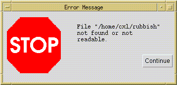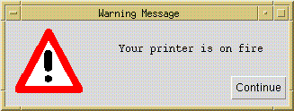
my confirm : String* (Void-> Void)->Void
Brings up a window with the given text. If the user clicks the OK button, the fate is called, otherwise the call evaluates to nothing. The window looks like this:
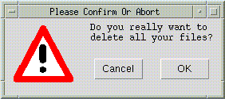
The icon appearing with the confirmation window is the same as appearing in warning windows (but this can be changed - see below).
Information windows display informative messages to the user. They come in two variations, a simple non-modal one which stays open until it is dismissed, and a modal one, which returns a function which when called closes the window (ensuring it stays open at least ten seconds).
my info : String-> Void my info_cc : String-> (Void-> Void)
Both open a window like the following, except the modal version lacks a close button:
my display: {title: String, width: Int, height: Int,
text: tk.Live_Text, cc: tk.Widget_ID-> Void}-> Void
my display_id: {window_id: tk.Window_ID, widget_id: tk.Widget_ID, title: String,
width: Int, height: Int, text: tk.Live_Text}-> VoidThese functions open up a window and display an annotated text in a dedicated window with a close button at the bottom left corner. Their difference is the way in which the identity of the text widget is handled: the first variant creates a text widget from scratch, and passes the widget id to the fate cc, the other takes a window and widget id as argument and builds a text widget in a window of that parish.
my enterText : {title : String, prompt : String, default : String,
width : Int, height : Int, cc : String-> Void} -> Void
my enterLine : {title : String, prompt : String, default : String,
width : Int, cc : String-> Void } -> Void
If you want different fonts, icons or layout, all can be easily
rearranged by changing the configurations of the utility windows,
which are the first couple of lines in src/toolkit/util_window.pkg.
Simple numeric choosers, an entry for integer values as in the following dialog (taken from the tabs example in src/toolkit/tests+examples/tabs_ex.pkg):
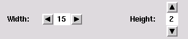
The class NumericChooser has the following export api:
api NUMERIC_CHOOSER_SIG =
api
my numeric_chooser : {initial_value : Int,
min : Int Null_Or,
max : Int Null_Or,
increment : Int,
width : Int,
orientation : tk.Orientation,
selection_notifier : Int -> Void} ->
{chooser : tk.Widget,
set_value : Int -> Void,
read_value : Void -> Int}
end
The function numeric_chooser needs the following data to
create a numeric chooser: the initial value of the chooser, an
optional minimum and maximum value, a value to add/subtract when a
button is pressed, the number of columns of the label, in which the
value is displayed, the orientation of the chooser (tk.VERTICAL
or tk.HORIZONTAL) and a
function to be called when the value changes. It returns a frame widget
containing the numeric chooser, a function for external setting of
the value and a function that returns the current value of the
chooser.
The class macro filer_g offers a generic file browser, allowing the user to browse the file system in the usual manner, and even search for regular expressions:
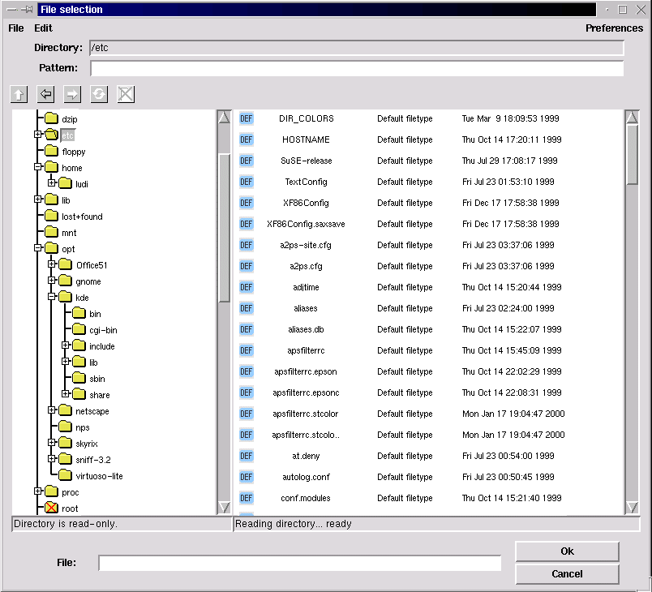
The filer_g class macro has the following argument api:
api my icons_path : Void -> String
The directory containing the icons to display for the filetypes specified in the list below.
my icons_size : Int * Int
The maximum width and height of these icons, needed to calculate the width and height of the file entries.
my root : Void -> String Null_Or
An optional root directory in the browsed filesystem (if there is no root directory specified, the whole filesystem is browsed).
my default_pattern : String Null_Or
The displayed files are filtered using the regular expression matcher contributed by Ryan Stansifer <ryan@cs.unt.edu> (which can be found in src/toolkit/regExp). Here you can specify a default pattern, which still can be changed by the user, but which is reapplied for every new entered directory.
package clipboard : Write_Only_Clipboard
The clipboard instantiation (see Sect. 4.5 below for further informations on the clipboard).
my filetypes : {ext : String List
display :{comment : String,
icon : String,
preview : ({dir : String,
file : String} -> Void) Null_Or,
file_to_obj : ({dir : String,
file : String} -> clipboard.Part)
Null_Or} Null_Or} ListThe list of known filetypes. A file is associated with a filetype by the extension. The extensions matching a filetype are given in a String List. You can also specify a default filetype (using the empty string "" in the extensions list), which is applied when no other filetype is matched. If no default filetype is specified, unmatched files are displayed as »Unknown filetype« with a system icon. The file type determines the icon used to display the file, how to preview a file with the middle mouse button, and how to import it into other smlt_tk components.
The display parameter is an option, because you might not want to display all filetypes. If it is set to NULL, files of this type will not be displayed. If a filetype should be displayed, you need to specify at least a comment to display with the files, such as »GIF image« of »ML source«, and an icon (of the maximum size above). Optionally there is also a preview function to be called with the file (see also the filer example in src/toolkit/tests+examples/filer_ex.pkg). The optional file_to_obj function is part of the clipboard instantiation and returns a representation of the dragged file in the clipboard object type. It only needs to be specified if you want to provide drag and drop functionality for this filetype.
package Conf : FILER_CONFIG
In the Conf class further configuration options concerning the look and feel of the filer are offered. There is also a class FilerDefaultConfig (in src/toolkit/filer_default_config.pkg), which you can use if you do not want to configure the filer from scratch.
end
The class Conf has to match the following api:
api FILER_CONFIG = api my title : String Null_Or
The title of the file selection window. If no title is specified, it will be »File selection«.
my font : tk.Font my font_height : Int
The font to use in the file selection dialog, its height in pixels is needed to calculate the height of a single lines in the files- and folders-boxes.
my foldersbox_width : Int my filesbox_width : Int my filesbox_numcols : Int my boxes_height : Int
The size of the boxes (in pixels), in which the files and folders are displayed, the number of columns of icons in the files box, and the height. Both boxes have the same height. The width of the filesbox must be at least filesbox_numcols times the width of a label containing filenames_cut characters (see below) in the specified font, otherwise the file entries might cross the right border of the visible part of the filesbox canvas (because tk cannot really calculate the size of any components drawn onto a canvas-Widget).
my foldernames_cut : Int my filenames_cut : Int
Here you can specify the maximum length of the displayed names of the files and folders.
my icon_font : tk.Font my icon_font_height : Int
The user can choose between detailed mode, which means that files are displayed with comments and the date of last modification, and non-detailed mode, where only the icon and filename is displayed in »icon style«. In this case, you might want to use a smaller font, which you can specify here, and of course you need to give the maximum height of this font here as well.
my preferences : {sort_names : Bool,
sort_types : Bool,
show_hidden_files : Bool,
hide_icons : Bool,
hide_details : Bool}
end
These are the user configurable settings, when the filer is first
opened. As mentioned above, the files can be displayed in detailed or
non-detailed mode, but the user can also choose if and how the files
should be sorted, if he wants to see hidden files and if icons should
be displayed.
The filer can be run in two modes: stand-alone,
where it runs as the main tk window, and returns the
directory and file name of a selected file, and as a subwindow, where
the filer communicates with other components via drag&drop. Thus,
we have the following export api:
api Filer = api /* critical errors -- e.g. can't open root directory */ exception ERROR of String /* stand alone version */ my stand_alone : Void -> (String Null_Or * String Null_Or) Null_Or /* system versions */ my file_select : ((String Null_Or * String Null_Or) Null_Or -> Void) -> Void my enter_file : Void -> Void
stand_alonestarts its own wish using start_tcl and therefore should not be used in the context of a running tk-based application. Its main use is probably to debug filer configurations. The file_select function needs a fate function to be called with the the directory and file name of a selected file, both as an option because there might be none. The normal way to start the filer is the enter_file function. It does not return a value, since selected files will be exchanged via the clipboard (see below).
/* set preferences */
my set :{sort_names : Bool Null_Or,
sort_types : Bool Null_Or,
show_hidden_files : Bool Null_Or,
hide_icons : Bool Null_Or,
hide_details : Bool Null_Or} -> Void
end
The set function can be used
to set the user configurable options. It should only be used when the
file selection window is not open.
There is also a partial
instantiation of the filer without clipboard support, the class macro
simple_filer_g, which has the
following argument api:
functor simple_filer_g(package options :
api
my icons_path : Void -> String
my icons_size : Int * Int
my root : Void -> String Null_Or
my default_pattern : String Null_Or
my filetypes : {ext : String List,
display : {comment : String,
icon : String,
preview : ({dir : String,
file : String} -> Void) Null_Or,
/* instantiate with NULL ! */ file_to_obj : ({dir : String,
file : String} -> DummyCB.Part) Null_Or} Null_Or} List
package Conf : FILER_CONFIG
end) : FilerAs there is no clipboard support, you don't need to specify file_to_obj functions in the filetypes list.
Tree Lists are used to edit, browse and select in tree-like objects. These tree-like objects are represented by PTREE_OBJECT, a data package that is part of the Common Infrastructure CI which is also used by other GUI components. Consequently, PTREE_OBJECTS can be exchanged with these components via the clipboard. A tree list can look like in the following screenshot (taken from the example in src/toolkit/tests+examples/tree_list_ex.pkg):
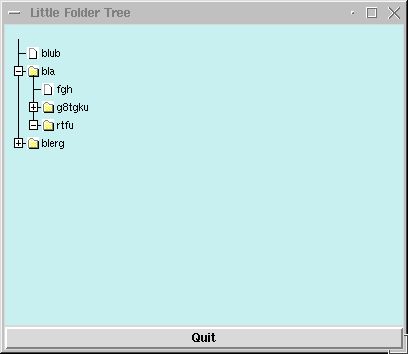
tree_list_g is a class macro that maps objects of Ptree_Part_Class (enriched by additional information) to a widget together with operations maniputating its state. The input apis are in detail:
api
Treelist_Callbacks =
api
type
Part_Ilk /* SML-necessity since no
HO-generics */
eqtype Node_Info
/* SML-necessity since no HO-generics */
type Subnode_Info /* SML-necessity since no HO-generics
*/
type path
/* SML-necessity since no HO-generics */
my content_label_action :
{path:path, was: String, cc: String -> Void} -> Void
/* fired whenever a content label is activated.
* Should be a modal action. */
my focus_change_notifier :
{changed_at:path List} -> Void
/* fired whenever a folder label or a folder icon is modified;
*
should be used if tree_list_g is nonmodally coupled over
* gui_state with a notepad. */
my objtree_change_notifier :
{changed_at: path} -> Void
/* fired whenever the tree-package (gui_state) has been modified -
*
e.g. as a consequence of an internal drag-drop.
* Used for rehresh`s of other views. */
my open_close_notifier :
{is_open:Bool,changed_at:path List} -> Void
/* fired whenever a folder label or a folder icon is opened;
*
can be used if internal tree is incrementally . */
my error_action
: String -> Void
/* fired whenever illegal drag-drop-operations are attempted.
*
Should be a modal action. */
end
Note that open_close_notifier can be used to generate this part of a subtree that is not already displayed; by this means, large trees can be displayed by incrementally inserting additional parts of the tree-state whenever this part is actually needed in the display. For technical reasons, the following wrapper api brings all elements together that are needed for the tree_list_g class macro:
api
join_g = /* only there fore stupid SML-reasons */
api
package M : Ptree_Part_Class;
package A : Treelist_Callbacks;
package clipboard : Clipboard;
sharing type A.Part_Ilk
= M.Part_Ilk;
type
objlist = Void -> M.Part_Ilk List;
/* there it is, the stupid reason */
sharing type clipboard.Part
= objlist;
sharing
type A.Node_Info = M.Node_Info;
sharing type A.Subnode_Info = M.Subnode_Info;
sharing type A.path
= M.path
end
On top of this definition, we have the class macro tree_list_g that generates our gui-component:
generic package
tree_list_g (package S : Join) :
api
enum Scale = MICRO | MINI | DEMO
type Config = {height
: Int Ref,
/* default 300 */
width : Int Ref,
/* default 400 */
scrollbars: tk.Scrollbars_At Ref,# Default NoneScb
no_icons : Bool Ref,
/* no icons used;
* default false */
std_icons : Bool Ref,
/* use icons speci-
* fied in M or use
* std-icons;
* default true */
scale_factor: Scale Ref
/* scales display,
* default MICRO */
}
my config
: Config
my create_canvas: S.M.Part_Ilk List -> tk.Widget
my upd_guistate : S.M.path -> S.M.Part_Ilk List -> Void
my get_guistate : Void -> S.M.Part_Ilk List
my refresh : S.M.path -> Void
my refresh_label: Void ->
Void
my get_selected : Void -> S.M.Part_Ilk List
my set_selected : S.M.path List -> Void
end
There is a slighly older version of the TreeList-Component described in the previous section, called Lazy Tree Lists. It has even in some parts a slightly better implementation, but is not integrated into the common infrastructure (CI). It also provides a simple history to navigate within the browsed data. You have to instantiate lazy_tree_g with an object type and some functionality on it. Most prominently, the lazy tree lists are used in the filer, whence the following screenshot has been taken:
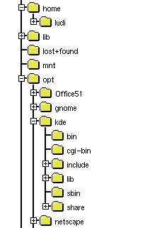
The class macro lazy_tree_g has the following argument api:
generic package lazy_tree_g(package Obj : Lazy_Tree_Objects) api Lazy_Tree_Objects = api type Part my children : Part -> Part List my is_leaf : Part -> Bool my sel_name : Part -> String my icon : Part -> tk.Icon_Variety my selected_icon : Part -> tk.Icon_Variety end
The type Part is a representation of the objects to display
in the tree list. The other functions are selectors for the needed
information to build the tree: A function to get the children of a
single object, a function that must be true for leaf objects
of the displayed tree, a function to get the name of a single object
and functions that return the icons to display for a single selected
and non-selected object.
The export api is:
generic package lazy_tree_g(package Obj : Lazy_Tree_Objects) : api type Part = Obj.Part exception ERROR of String enum history_state = hist_start | hist_middle | hist_end | hist_empty
The object type, an exception to be raised when errors occur and the return type of the function position below, that returns the position within the history.
my tree_list :
{width : Int,
height : Int,
font : tk.Font,
selection_notifier : Part Null_Or -> Void} ->The tree list configuration options: The size in pixels of canvas widget containing the tree list, the font to use, a function to be called with the selected object (when the selection changes; the selected object is given as an option, because the selection can also change to none, e.g. when the parent node of the selected object is closed).
{canvas : Part -> tk.Widget,
selection : Void -> Part Null_Or,
up : Void -> Void,
position : Void -> history_state,
back : Void -> Void,
forward : Void -> Void}
endThe function tree_list returns the canvas widget containing the tree list, a function that return the selected object as an option (there might be none), a function to change the selection to the parent node, a function that returns whether the history is empty, at the beginning, the end or somewhere in the middle (which might be needed if you want to activate/deactive buttons associated with the history functionality in the user interface; see also enum history_state above), a and functions that make the tree list go backwards and forward in the history.
The drag&drop package is the lower layer of the generic interface package. It provides a canvas on which items are displayed, which can be ``grabbed'' with the mouse (by moving the cursor on them and pressing the right mouse button) and ``dropped'' (moving the cursor to another place on the canvas and releasing the right mouse button). By dropping objects onto each other, specific operations can be triggered.
Like generate_gui_g, the package is generic over the items in question:
generic package drag_and_drop_g(drag_and_drop_items: Drag_And_Drop_Items) : api include Drag_And_Drop sharing item = drag_and_drop_items.item end
with the following export api:
api Drag_And_Drop = api type item; type DDCanvas; exception DRAG_AND_DROP of String; my init : tk_types.Widget_ID-> DDCanvas; my place : DDCanvas-> item -> Void; my delete : DDCanvas-> item -> Void; my canvas_event_callbacks : tk_types.Widget_ID -> tk_types.Event_Callback List; end
Technically, the drag&drop package enriches the items on a canvas to handle drag&drop style manipulation. One creates a canvas widget, and passes its widget ID to the function init. The result is a drag&drop-canvas, on which one can place items with the function place and delete objects by the function delete. These items are described by the apis Drag_And_Drop_Items:
api Drag_And_Drop_Items = api type item my get_canvas_item_ID : item-> tk_types.Canvas_Item_ID my selDropZone : item-> coordinate.Rectangle my isImmobile : item-> Bool my grab : item-> Void my release : item-> Void my enter : item -> item List -> Bool my leave : item -> Void my drop : item -> item List -> Bool package clipboard : api include Write_Only_Clipboard sharing Part= item end end
The function selCItemId returns the Id of the underlying canvas item. Every item has a drop zone associated with it. This is the area, relative to the canvas item's upper left corner, in which the item is susceptible to drag&drop operations. (It is left to the class providing the drag&drop items to ensure that the drop zone does not extend beyond the underlying item.)
Items can be selected by clicking them with the middle mouse button (the ``select'' button). Selected items are highlighted; selection allows cut, copy & paste operations, and in particular dragging multiple objects.
If the cursor is moved over an item i, and the left mouse button (called the grab button hereafter) is pressed, the item (along with other previously selected items) is ``grabbed'', if the function isImmobile i returns false (otherwise, nothing happens). The function grab i is called, so the item can e.g. change its graphical representation to indicate this fact. The object may either stay where it is, and the cursor may change shape to indicate the user is currently moving an item, or the whole object may be moved about along with the cursor, depending on the implementation of drag&drop, but the item class should not make any presumptions about this.
If the cursor enters the drop zone of an item i while dragging another objects [j_1, ...,j_n], the function enter i [j_1, ...,j_n] is called. If it returns true, the entered object i is supposed to be accepting a drop of the objects j_1, ...,j_n. It may (and should) change its visual representation to signal this fact. If the cursor is then released without having left the drop zone, a drop operation is performed by calling the function drop i [j_1, ..., j_n]. If the result is false, the drop is said to be "destructive", and the dropped item is deleted from the canvas, otherwise it reappears at the position where it was grabbed. If on the other hand the cursor leaves the drop zone of i again without the grab button being released, the function leave i is called, so i can eg. revert its visual appearance to the normal state. leave i is also called after a drop operation (no matter if destructive or not), but it is not called if the preceding call of enter returned false.
If the grab button is released with the grabbed item being over no other item's drop zone, the item is moved to that place on the canvas and the function release is called. release is also called after a non-destructive drop operation for all the dropped items.
The drag&drop-package further interfaces to the clipboard to allow interchange of objects across different drag&drop canvases, or to other applications. See the section on the clipboard below.
The file toolkit/tests+examples/boxes.pkg contains a simple example of how to use the drag&drop package.
The module generate_gui_g implements a simple generic user interface based on the drag&drop paradigm. It comes in two variants: one based on "flat" objects (generate_gui_g); and another in which the objects are hierarchically organized as trees (generate_tree_gui_g). Both versions of the component are based on the common infrastructure (CI).
It has been implemented with a view to implementing user interfaces for applications based on the theorem prover Isabelle, but can also be used without Isabelle. On top of it, we have bilt a more elaborate user interface, the generic user interface toolkit GenIT. In GenIT, the construction history of objects is recorded, and becomes a first-class object of the interface. This allows features such as replay, redo, change and dependency management, and history navigation all to be implemented on the generic level of the generate_gui_g. Because of its size and complexity, we have decided to make GenIT available separately from tk. See also [LW99,LW00].
The application one wishes to build an interface for is described by a api SIMPLE_APPL_SIG. The generic user interface is a class macro
generic package SimGenGui(appl: SIMPLE_APPL_SIG) : SIMGENGUI
which when instantiated with an application returns a graphical user interface for that application.
Every application provides a collection of objects, which the generate_gui_g displays in a window (the ``notepad''). Every object has a type, which determines the icon used to represent the object on the manipulation area, and the operations applicable to that object. In generate_tree_gui_g, aside to the notepad, there is a navigation board displaying the object hierarchy, where the folders correspond to contents of the notepad and the leafs the objects of the system.
Operations come in three variations: nullary operations, corresponding to constants, or in other words, the objects which are there from the start; unary operations, which take exactly one object as their argument; and binary operations, which take two objects arguments.
Unary operations are applied by clicking on the object with the right mouse button, and selecting the corresponding operation from the menu appearing. Binary operations are applied by grabbing an object with the left mouse button, dragging it across the screen, and dropping onto another object.
New objects can be created as results of unary or binary operations.
In the api SIMPLE_APPL_SIG, there are two types Part_Ilk and Part_Type, modelling the objects and the possible object types respectively. The typing is modelling by a function part_type: Part_Ilk -> Part_Type, assigning to each object a type, and its extension objlist_type : Part_Ilk List -> Part_Type to lists of objects.
Further, objects may have a limited form of state, as modelled by the type mode. The mode of an object is given by the sel_mode : Part_Ilk-> mode function, and set by the set_mode : Part_Ilk* mode-> function. The mode can be set by the user with a pop-up menu provided by generate_gui_g; to implement this, modes have to have a name (given by mode_name: mode-> String), and the range an object's modes can take is limited by its type (modes: Part_Type-> mode List).
The type New_Part models objects which are about to appear on the notepad. They are given by an object, a position where it should appear, and a direction (indicated by tk_types.Anchor_Kind) where it should appear if there already is an object at the indicated direction. (The configuration option delta determines the minimum distance of objects when placing new objects.) Unary operations come in two flavours, standard operations and ones depending on the type of the object. Standard operations are available for all objects, and comprise of a list given by std_ops (typically, the first of this list will be a function to display an object), and two special operations rename and delete. Rename is called with the object, and a fate with which the name of the object can be set. The actual querying the user for a name, and more importantly accepting or rejecting the user's choice, has to be implemented by the application. In contrast, delete is called when the object is about to be deleted to allow the application to clean up; the actual deletion (i.e. removal from the notepad) is implemented by generate_gui_g. This is described by the api SIMPLE_APPL_SIG, of which we have this excerpt:
api SIMPLE_APPL_SIG = api eqtype Part_Type eqtype mode type Part_Ilk type New_Part = Part_Ilk * tk_types.Coordinate* tk_types.Anchor_Kind /* Typing objects */ my part_type : Part_Ilk -> Part_Type my objlist_type : Part_Ilk List -> Part_Type null_or.option my is_constructed : Part_Type-> Bool /* objects of this type are construction objects */ /* Each object has a name, which can be selected and changed * with the standard rename operation (below). */ my sel_name : Part_Ilk -> String null_or.option /* Modes, and how to select, set and name them. */ my modes : Part_Type -> mode List my mode_name : mode -> String my sel_mode : Part_Ilk -> mode my set_mode : Part_Ilk* mode-> Void /* Icons. Crucially, changing the mode may change the icon. */ my icon : Part_Type* mode -> icons.Icon /* constants */ my init : Void -> New_Part List /* standard unary operations */ my std_ops : ((Part_Ilk -> Void)* String) List my rename : Part_Ilk -> (String-> Void)-> Void my delete : Part_Ilk -> Void /* object-type-specific unary operatons */ my mon_ops : Part_Type -> ((Part_Ilk* tk_types.Coordinate -> (New_Part -> Void) -> Void) * String) List /* binary operations */ my bin_ops : Part_Type* Part_Type -> (Part_Ilk* tk.Coordinate* Part_Ilk List* (New_Part-> Void)-> Void) null_or.option
The type of mon_ops and bin_ops certainly requires an explanation. Both are indexed by the type of the object(s) involved, which is the first argument.
For an object of type t, mon_ops t is a list of pairs [(f_1,s_1), ..., (f_n, s_n)], where s_i is the name of the operations under which it appears in the menu, and f_i:Part_Ilk -> (Part_Ilk -> Void) -> Void is a function implementing the operation, taking the object as its argument, and a fate (of functionality New_Part-> Void) as its second argument, by which new objects can be introduced to the notepad area (so each call of the fate results in the appearance of exactly one object and its subsequent appearance on the notepad).
For two objects of type t_1 and t_2 (corresponding to an object of type t_2 being dropped onto an object of type t_1), binOps t_1 t_2 is an option: either it is NULL which means that the drop operation is not possible; or it is THE f where f is a function taking as its first argument the object being dropped onto, as its second argument the singleton list of the object being dropped, and as a third argument a fate producing new objects on the notepad. Both the dropping and the dropped object remain unchanged (to implement operations changing objects, see below). If binOps t_1 t_2 is THE f, its icon is highlighted (see Section 4.4.4. below) to indicate that the operation is possible.
The only way to change an object's internal package is the construction area. The general idea here is that each instantiation of the generate_gui_g should be thought of as an application to build objects of one specific type. For example, in the Transformation Application System TAS the main construction objects are programs, and the other objects are program transformations, parameter instantiations etc. (see [LW99]), and in the interface IsaWin to the theorem prover Isabelle, the main construction objects are proofs (for theorems), and the other objects are theorems, theories, rewriting sets etc.
A construction object can be opened by double-clicking it with the left mouse button. A (sub)-window will appear (see configuring generate_gui_g below) showing the ``internals'' of the object, possibly along with menus, buttons and other widgets. One can now either use these to change the objects' internal package, or one can drag down objects from the manipulation area to interact with the object under construction. If one is done, there should be a closing button or menu entry by which one can close the construction area again. The specifics and visual appearance of the construction area are entirely dependent on the application in question (hence there should be a closing button, technically this is not enforced), and have to be implemented by the application as follows.
Note also that there is no restriction to one type of object- object types which can be constructed are those for which the predicate is_constructed is true. The construction area is described by the following excerpt from the api Application:
type ca my area_ops : Part_Type-> ca-> Part_Ilk List-> Void my area_open : tk_types.Window_ID* Part_Ilk* (Part_Ilk -> Void) -> (ca* tk_types.Widget List* (Void-> Void)) my area_init : Void-> Void
The type ca models the state of the construction area. When an object is opened in the construction area, area_open is called with the object and the identifier of the window in which the construction area sits. This may be generate_gui_g's window, or a separate window, as determined by the configuration of generate_gui_g. The third argument to area_open is a function which is called when the construction is finished; it creates one (or more) objects on the notepad, most notably the one which has been constructed. Be sure to call this function with the constructed object prior to closing the construction area, otherwise the object will disappear in a puff of SML. area_open returns a triple, consisting of the state of the construction area just created, a list of widgets making up the construction area, and a function to be called after the widgets have been installed which initializes them.
In contrast, area_init is just called once, after generate_gui_g has been started, e.g. to initialize variables for radiobuttons. When calling area_init the construction area is not open, so do not try to initialize widgets here.
Finally, dragging an object down from the notepad into the constructoin area results an operation being triggered. The operation is given by area_ops: Part_Type-> ca-> Part_Ilk List-> Void which takes as argument the type of the object(s) dragged down, the state of the constrution area, and the actual objects; it does not have a meaningful return value.
As we can see, the
construction area even more relies on side effects than the rest of
the generate_gui_g. The functional purist shudders, since this also means we
have to provide functionality like history navigation (or the close
button) individually, for each application, rather than on a generic
level. These failings area remedied in GenIt.
Like the utility windows, the visual appearance of the generate_gui_g can be configured. This configuration is handled by the subpackage package Conf: GENGUI_CONF of the application with the following api. Apart from visual details like colours, window sizes and icons, we can also configure wether icons should remain visible while being dragged across the notepad (moveOpaque), and wether the construction area should be a subwindow of the notepad, or a separate window (oneWindow).
api GENGUI_CONF = api /* This is the width and height of the construction area */ my width : Int my height : Int /* The background colour of the construction area */ my background : tk_types.Color /* The font and the width of the box, in pixels, * used to display the icons */ my iconNameFont : tk_types.Font my iconNameWidth : Int /* The icon used to display the trashcan, and its initial position */ my trashcanIcon : Void-> icons.Icon my trashcanCoord : tk_types.Coordinate /* If opaqueMove is true, then the whole item will move if it * is grabbed; ows. only change cursor to indicate an object is * being moved. */ my moveOpaque : Bool /* If oneWindow is true, the construction area will appear as * a widget within the lower part of the window (which will be * large enough to hold it. Actually, this should be called _one * widget_, since it means that both construction and assembly * come within one frame); otherwise, the construction area * will appear as a separate window. */ my oneWindow : Bool /* The height and width of the construction area, and the * position of the window. The X/Y position and the caTitle options * determine the placing and title of the construction area window, * and only take effect if oneWindow is false. */ my caHeight : Int my caWidth : Int my caXY : (Int* Int) null_or.option my caTitle : String-> String /* The minimum distance between two objects' dropzones when placing * new objects */ my delta : Int end
The export api of generate_gui_g divides roughly into two parts. The first block describes single objects and how to introduce them onto the notepad. The second part models the state of generate_gui_g as a whole (type gui_state). There is an initial state initial_state corresponding to no objects being created yet, a function state:Void-> gui_state which returns the current state of notepad and construction area, and a function init:gui_state-> Void which has to be used as the initialization function of the main window, because it initializes generate_gui_g. If generate_gui_g suddenly behaves very strange indeed (e.g. doesn't react to drag&drop) this is most likely caused by failing to initialize it properly. Finally, the whole generic interface is just a widget (isn't everything?):
api Generated_GUI = api type Part_Ilk type New_Part my intro : New_Part -> Void /* Introduce (not "create" really) a new object * onto the manipulation area. */ /* the state of the gui */ type gui_state = New_Part List /* The generate_gui_g main widget. You MUST use the init function below * to initialize this widget. (Note generate_gui_g doesn't check this * itself.) */ my main_wid : tk_types.Window_ID -> tk_types.Widget /* In the following, init takes a gui_state and returns a function * which has to be used as the init function of the main window, * as it sets up the generate_gui_g. * * state returns a gui_state suitable as an argument to init. */ my init : gui_state-> Void /* call that as init action of main window */ my state : Void-> gui_state /* This is the initial state which only has those objects as given * by the application's init() function (see above). */ my initial_state : Void-> gui_state exception GENERATE_GUI_FN of String /* Something went wrong. If this exception is raised, something * has badly, unrecoverably (for this session) gone wrong. */ /* Resynchronize all icons, e.g. if objects have changed their mode. */ my redisplay_icons : (Part_Ilk-> Bool)-> Void type objectlist= Part_Ilk List package clipboard : Clipboard sharing clipboard.Part = objectlist end
The file toolkit/tests+examples/simpleinst.pkg contains a small example of how to use the generic graphical user interface.
simpleinst knows two object types, texts and numbers. Texts can be concatenated by drag&drop (the dropped text being appended to the one it is dropped onto), or they can be opened and edited in the construction area. Numbers, on the other hand, have four modes, corresponding to the four basic arithmetical operations. When dropping a number onto another, it is added to, subtracted from, multiplied with, or it divides the number it is dropped onto, corresponding to the mode of the dropped object.
There is a button importFile which calls the filer to select a file the contents of which (as a text) then appear on the manipulation area. The following picture shows the visual appearance of simpleinst with the object obtained by dropping the predefined object Jerusalem 2 onto Jerusalem 1 currently open in the construction area:
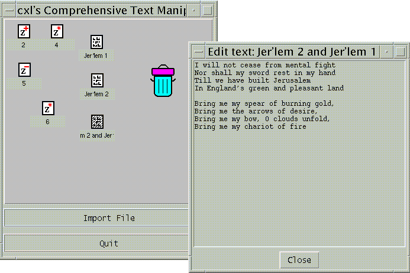
The visual appearance of a system obtained by instantiating generate_gui_g can be customised considerably. The basic layout will remain the same, with the the construction area appearing in the bottom half of the screen, but the construction area's appearance and functionality are freely programmable. The main window of the simple instantiation can have menus and/or buttons attached to it, and of course the icons, including the trashcan icon, can be changed.
An implementation of tabs as in the following screenshot (taken from the tabs example in src/toolkit/tests+examples/tabs_ex.pkg),
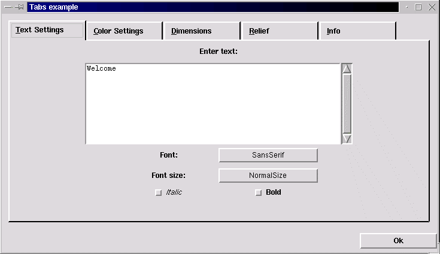
which has the following export api:
api TABSSIG =
api
exception ERROR of String
my tabs : {pages : {title : String,
subwidgets : tk.Widgets,
show : tk.Void_Callback,
hide : tk.Void_Callback,
shortcut : Int Null_Or} List,The definition of the displayed pages including the page title, the widgets displayed within the frame building the page, and a shortcut key as an integer value (the nth char in the page title). The show and hide actions are needed to initialize the widgets when a page is shown, and save its content when a page is hidden. Therefore the show action is called when the widgets are allready displayed, and the hide action is called just before the widgets are (temporarily) destroyed. There is also an example in src/toolkit/tests+examples/tabs_ex.pkg).
configure : {width : Int,
spare : Int,
height : Int,
font : tk.Font,
labelheight : Int}}These are the available configuration options: The width and height of the frame containing the widgets of a single page, the amount of pixels to spare right from the page titles, the font of the page titles and the maximum height of the labels containing the page titles (height of the specified font + x).
-> tk.Widget * tk.Event_Callback List
The returned canvas widget in which the tabs are displayed and the naming list containing the key shortcuts, which should be bound to the window containing the tabs. Unfortunately there is no other way of key adding event_callbacks to the tabs, because Tcl/Tk does not support key event_callbacks to canvases.
my std_conf : {width : Int,
spare : Int,
height : Int,
font : tk.Font,
labelheight : Int}This is a standard configuration to use with the tabs (comments on parameters, see above).
A simple implementation of tables, that returns a grid of labels within a frame (screenshot taken from the tables example in src/toolkit/tests+examples/table_ex.pkg):
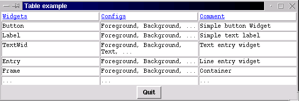
The class Table has the following export api:
api TABLE_SIG =
api
my table : {constant_column_width : Bool,If set to true, the largest column width found is applied to all columns.
headline_relief : tk.Relief_Kind, headline_borderwidth : Int, headline_foreground : tk.Color, headline_background : tk.Color, field_relief : tk.Relief_Kind, field_borderwidth : Int, field_foreground : tk.Color, field_background : tk.Color,
The relief, borderwidth, foreground and background colour of the headline and table fields.
container_background : tk.Color} ->
The background colour of the frame containing the table fields (visible if a different borderwidth is set for headline and table fields).
tk.Live_Text List List -> tk.Widget
The textual content of the table. Adding widgets to the annotated text might confuse the calculation of a constant comlumn width.
The returned frame widget containing the table.
my std_conf : {constant_column_width : Bool,
headline_relief : tk.Relief_Kind,
headline_borderwidth : Int,
headline_foreground : tk.Color,
headline_background : tk.Color,
field_relief : tk.Relief_Kind,
field_borderwidth : Int,
field_foreground : tk.Color,
field_background : tk.Color,
container_background : tk.Color}A standard configuration offering standard values for the parameters described above.
This section details the software and hardware requirements necessary to run tk, the installation procedure, the runtime configuration of tk and other helpful hints.
tk requires the following software:
For the default configuration (pipe-based communcation with Tcl/Tk), a Standard ML compiler implementing the Posix and Unix packages from the base library. In particular, tk is known to work with the following compilers:A wish (Tcl/Tk interpreter) of version 4.0 to 8.0 or later. If you do not know if the wish is installed on your system, type wish in a shell window; you should get a Tcl prompt (%) and a blank window called wish. Otherwise, download Tcl/Tk from here.
Optionally, a standard make for installation (GNU make and Solaris make are known to work).
The TCL_INSIDE configuration only runs with Standard ML of New Jersey (SML/NJ), but should be easier to port to non-Posix systems such as Windows.
Optionally, a standard make for installation (GNU make and Solaris make are known to work).
tk has no particular hardware requirements, and is known to run on the Solaris and Linux operating systems.
tk can be obtained as a single tar file from the tk home page
Before you start the installation itself, you have to configure tk to your system's need by setting the variables in the first section of the Makefile to appropriate values. The most critical of these are obviously SMLTK_LIB and SMLTK_TCL:
The variables SMLTK_LIB, SMLTK_LOGFILE and SMLTK_TCL also control the runtime of tk (see section 5 of the tk manual). tk can be installed by producing a dumped image, or by using SML/NJ's compilation manager. The installation itself is painless. Just type make in the toplevel directory, and it will produce an image; alternatively, use SML/NJ's compilation manager (see below).
To remove the Compilation Manager's temporary files, do make clean. To also remove the dumped image, use make realclean.
As already mentioned previously, tk comes in two different configurations: the default one, based on a loose coupling with the Tcl/Tk shell, and another one called TCL_INSIDE, based on linking the Tk-sources on the C-level to the NJML-runtime system. To install the configuration TCL_INSIDE is the package njml_patchwhich can be downloaded from the tk web site is needed. It has to be applied to an existing SML/NJ installation which it transforms by adding additional sources and patching others at the level of C source files. After succesfully running the Makefilein njml_patch (for which various system dependent paths have to be set appropriately; see documentation for details), the compilation of tk on top of this extended runtime system is performed with the flag TCL_INSIDE set on. The effect is limited only to a very small portion of tk.
The following variables govern the runtime behaviour of tk:
These are given default values in the Makefile. The default values can be overridden by setting an environment variable of the same name, and calling the function tk.init(); only the options to which the corresponding environment variable actually exists are changed, allowing a selective update. The environment variable can in turn be overriden by a commandline argument of the form --<VARNAME>=value (as in --SMLTK_TCL=/bin/wish) when calling an tk application from the shell. Finally, their value can be changed from within SML by calling e.g. tk.update_tcl_path, see Sect. 3.2.17 above.
tk has been developed with SML/NJ, version 110. Meanwhile, other SML97 compilers have become available, and tk runs under PolyML and MoscowML as well (apart from small details such as the kill-mechanism and the generation of a binary image for MoscowML). Given these experiences, we believe it should be relatively easy to port tk to other platforms and compilers; an experienced ML programmer should be able to do this himself. The main work in porting tk to another compiler is to write a class sys_dep, which implements the api SYS_DEP (in src/sys_dep.api). The files njml.pkg, poly.pkg and mosml.pkg may serve as a starting point.
If you do port tk to another operating system or SML compilers, please let us know so we can support your port in future releases of tk.
We also invite further contributions to the toolkit library. If you have written a piece of tk software which is sufficiently versatile to be of general use, then please do get in touch with us. We would very much like to extend the toolkit library in future releases.
This section contains some tips which you may find useful.
If you don't want to produce a binary image, or are using Moscow ML, you can load tk by useing the file root_poly.pkg and root_mosml.pkg (for PolyML and Moscow ML respectively.)
SML/NJ users can make efficient use of the Compilation Manager by including a reference to tk/src/sources.make6 in the entity description files of their application(s), and the CM will automatically compile tk when needed. You may want to stabilize tk in that case (see the manual for CM).
The dumped images contain some of the examples found in the source distribution. If you do not want them, change this in src/sources.make6.
The export interface of tk consists of two packages tk_types and tk. If you want them to be opened in the dumped images, this can be changed in src/Makefile. Also, the dumped images call tk.initSmlTk first thing they are loaded (in order to correctly set SMLTK_ROOT etc. from the environment variables). This can be changed in src/njml1.sml in the function dump_executable_heap_image.
TCL_INSIDE is quite tricky to install. It requires the installation of the package "njml_patch", that attempts to modify and extend the C-sources of the njml-runtime system and to link the Tk-library to it. This process highly depends on very machine-dependent features and may fail for various reasons.
tk cannot send an interrupt to a running application (see the discussion in section 2), so one cannot implement an interrupt button. Interupts have to be sent to the window of the SML-shell.
The interrupt mechanism doesn't work with SML compilers other than SML/NJ.
[Fos 97] E. Foster-Johnson: Graphical Applications with Tcl and Tk . M&T Books . 2nd Edition December 1997 . ISBN:1558515690.
[FW94] M. Fröhlich, M. Werner: The Interactive Graph-Visualization System daVinci - a User Interface for Applications. Informatik-Bericht Nr. 5/94, Universität Bremen, 1994.
[HM 97] M. Harrison, M. McLennan: Effective Tcl/Tk Programming. Addison-Wesley, December 1997. ISBN: 0201634740.
[KSW96] Kolyang, T. Santen, B. Wolff: Correct and User-friendly Implementations of Transformation Systems. In: M.C. Gaudel, J. Woodcock (ed): FME'96: Industrial benefits and Advances of Formal Methods, pp. 629-648. LNCS 1051,1996.
[Lib 94] D. Libes: Exploring Expect. O'Reilly 1994. ISBN: 1565920902.
[LW99] C. Lüth, B. Wolff: Functional Design and Implementation of Graphical User Interfaces for Theorem Provers. Journal of Functional 9(2), 167-- 189, 1999.
[LW00] C. Lüth, B. Wolff: TAS - A Generic Window Inference System. 13th International Conference on Theorem Proving in Higher-Order Logics TPHOLs 2000, LNCS 1869, Springer Verlag. pages 405--422
[Oust 94],J. K. Ousterhout: Tcl and the Tk .Addison-Wesley . May 1994. ISBN: 020163337X.
[Pau 96] L. C. Paulsen: ML for the Working Programmer(2nd. Ed.). Cambridge University Press 1996. See also http://www.cl.cam.ac.uk/users/lcp/MLbook/.
[PR95] F. Pessaux, F. Rouaix: The Caml/Tk interface, Projet Cristal, INRIA Roquencourt, July 1995. ftp://ftp.inria.fr/lang/../INRIA/Projects/cristal/caml-light/camltk.dvi.tar.gz.
[REF 96] Tcl and Tk Reference Manual. Linux Systems Labs . May 1996. . See also http://www.tclconsortium.org/books/index.vet.
[VTS95] T. Vullinghs, D. Tuijnman, W. Schulte: "Lightweight GUIs for Functional Programming". PLILP 95, Utrecht, The Netherlands, Sept. 20-22, 1995.
[Wel 97] B. Welch: Practical Programming in Tcl and Tk.
Prentice-Hall/PTR. 2nd Edition July 1997. ISBN: 0136168302. See also
http://www.tclconsortium.org/books/index.vet.
tk can produce a logfile (see above) in which the communication between SML and the wish is recorded. Logfiles can be helpful in debugging applications, since they show what "really" happened; in particular, this can show whether source of unexpected behaviour lies in the SML code, or quirks of Tk (or, God forbid, a bug in tk).
Nevertheless, it should be stressed that logfiles are not for the beginner, but rather the advanced user exploring the more intricate features of both tk and Tk.
In this appendix, we present a commented logfile produced by the small example from section 1. The user interaction proceeds as follows: after starting the program, enter a name in the text entry, press return and close the window by clicking the quit box. Here is the resulting logfile.
The general format of the logfile is that lines beginning with == are sent from tk to the wish, and lines beginning with <== are sent from the wish to tk. It always starts with a standard prelude, which sets up the wish for use with tk:
== set tcl_prompt1 "puts -nonewline {} "
set tcl_prompt2 "puts -nonewline {} "
proc Write {msg} {
puts stdout $msg
flush stdout
}
proc WriteSec {tag msg} {
set status [catch {eval $msg} res]
if {$status == 0} {
puts stdout "$tag $res"
} else {
puts stdout "ERROR $res"
}
flush stdout
}
proc WriteCmd {tag msg} {
set status [catch {eval $msg} res]
if {$status == 0} {
puts stdout "$tag"
} else {
puts stdout "ERROR $res"
}
flush stdout
}
proc WriteM {msg} {
puts stdout $msg
flush stdout
puts "EOM"
flush stdout
}Now follow the packing commands for the main window. Note the names: the main window's Tk name will always be . (dot). Sub-windows or widgets within a window, or subwidgets will always have the name of the father window/widget, followed by a dot and their own name. The names anowidXX are the anonymous widget identifiers created by make_widget_id.
Here, the packing proceeds in the following order: first the frame with its two components is packed, the text label "name" on the left, and the text entry on the right followed by the event_callbacks for the text entry:
== WriteCmd "CMDOK" {pack [frame .anowid24 ] -side top}
<== CMDOK
== WriteCmd "CMDOK" {pack [label .anowid24.anowid22 -text "name:"] -side left}
<== CMDOK
== WriteCmd "CMDOK" {pack [entry .anowid24.anowid21 -width 20] }
<== CMDOK
== WriteCmd "CMDOK" {bind .anowid24.anowid21 <Return> {Write "WNaming main .anowid24.anowid21 <Return> (%b,%s,%x,%y,%X,%Y) "}}
<== CMDOKNote how the wish acknowledges execution of each command sent with CMDOK. Further, one cannot see from the logfile what <Return> has been bound to, since tk only binds it to a function indicating the event has occurred, and does the mapping to the relevant ML function internally. The packing continues with the quit button, and finishes with setting the window title:
== WriteCmd "CMDOK" {pack [button .anowid23 -text "Quit" -command {Write "Command main .anowid23"}] -side bottom}
<== CMDOK
== WriteCmd "CMDOK" {wm title . "Please enter name"}
<== CMDOKNow tk is waiting for user input. Hence, the next communication is initiated by the wish, indicating that the <Return> key has been pressed:
<== WNaming main .anowid24.anowid21 <Return> (96,0,80,16,277,193)
On the ML side, the function end_input is executed. This calls the tk function get_tcl_text to read the contents of the text widget. A value is requested from the wish with WriteSec, and sent in a line preceded with VValue:
== WriteSec "VValue" {.anowid24.anowid21 get}
<== VValue William LeeThen, the title of the window is set accordingly:
== WriteCmd "CMDOK" {wm title . "William Lee"}
<== CMDOKAgain, the system is waiting for something to happen. In this case, the quit button (widget id anowid23 is pressed. tk calls the function quit, which in turn closes the window:
<== Command main .anowid23 == destroy .
It should be pointed out that in an application of decent size, the interaction between wish and tk is not always as orderly as above. In particular, event_callbacks may be activated at any point, even when tk is waiting for a value from the wish.